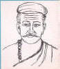
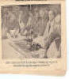

विदेह प्रथम मैथिली पाक्षिक ई पत्रिका
🔍 स्थानीय खोज — सभ मिथिला रत्नक नाम, परिचय खोजू

'वैदेह राजा' ऋगवेदिक कालक नमी सप्याक नामसँ छलाह, यज्ञ करैत सदेह स्वर्ग गेलाह, ऋगवेदमे वर्णन अछि। ओ इन्द्रक संग देलन्हि असुर नमुचीक विरुद्ध आ ताहिमे इन्द्र हुनका बचओलन्हि।शतपथ ब्राह्मणक विदेघमाथव आ पुराणक निमि दुनू गोटेक पुरोहित गौतम छथि से दुनू एके छथि आ एतएसँ विदेह राज्यक प्रारम्भ। माथवक पुरहित गौतम मित्रविन्द यज्ञक/ बलिक प्रारम्भ कएलन्हि आ पुनः एकर पुनःस्थापना भेल महाजनक-२ क समयमे याज्ञवल्क्य द्वारा। निमि गौतमक आश्रमक लग जयन्त आ मिथि -जिनका मिथिला नामसँ सेहो सोर कएल जाइत छन्हि, मिथिला नगरक निर्माण कएलन्हि। निमीक जयन्तपुर वर्तमान जनकपुरमे छल, मिथीक मिथिलानगरीक स्थान एखन धरि निर्धारित नहि भए सकल अछि, अनुमानित अछि जनकपुरक लग । ’सीरध्वज जनक’ सीताक पिता छथि आ एतयसँ मिथिलाक राजाक सुदृढ़ परम्परा देखबामे अबैत अछि। ’कृति जनक’ सीरध्वजक बादक 18म पुस्तमे भेल छलाह। कृति हिरण्यनाभक पुत्र छलाह आ जनक बहुलाश्वक पुत्र छलाह। याज्ञवलक्य हिरण्याभक शिष्य छलाह, हुनकासँ योगक शिक्षा लेने छलाह। कराल जनक द्वारा एकटा ब्राह्मण युवतीक शील-अपहरणक प्रयास भेल आ जनक राजवंश समाप्त भए गेल (संदर्भ अश्वघोष-बुद्धचरित आ कौटिल्य-अर्थशास्त्र)।


शतपथ ब्राह्मणक विदेघ माथवक विदेह आगमन, आगिक सदानीरासँ आगाँ नहि बढ़बाक चर्च। शतपथ ब्राह्मणक विदेघमाथव आ पुराणक निमि दुनू गोटेक पुरोहित गौतम छथि से दुनू एके छथि आ एतएसँ विदेह राज्यक प्रारम्भ।

याज्ञवल्क्य मिथिलाक दार्शनिक राजा कृति जनकक दरबारमे छलाह। हुनकर माताक वा पिताक नाम सम्भवतः वाजसनी छलन्हि। ओना हुनकर पिता देवरातकेँ मानल जाइत छन्हि। याज्ञवल्क्य १. शुक्ल यजुरवेद, २. शतपथ ब्राह्मण, ३.बृहदारण्यक उपनिषद आ ४.याज्ञवल्क्य स्मृतिक दृष्टा/लेखक छथि।


वैशेषिक दर्शन कणाद

महावीर विदेहमे छह टा बस्सावास बितेलन्हि।

ओना तँ महावीर विदेहमे छह टा बस्सावास बितेलन्हि मुदा बुद्ध एकोटा नै मुदा मिथिलामे बौद्ध धर्मक प्रभाव पछाति बढ़ल। बुद्ध वैशाली नगरीमे आम्रपालीक उद्यानमे लिच्छवीगणकेँ सन्देश देने छलाह।

धर्म आ विधिक क्षेत्रमे कौटिल्यक अर्थशास्त्र आ याज्ञवल्क्य स्मृतिमे बड्ड समानता अछि जे चाणक्यक मिथिलावासी होयबाक प्रमाण अछि। अर्थशास्त्रमे(१.६ विनयाधिकारिके प्रथमाधिकरणे षडोऽध्यायः इन्द्रियजये अरिषड्वर्गत्यागः) कराल जनकक पतनक सेहो चर्चा अछि। तद्विरुद्धवृत्तिरवश्येन्द्रियश्चातुरन्तोऽपि राजा सद्यो विनश्यति- यथा दाण्डक्यो नाम भोजः कामाद् ब्राह्मण कन्यायमभिमन्यमानः सबन्धराष्ट्रो विननाश करालश्च वैदेहः,...।

चाणक्यक शिष्य

पञ्जीमे आर्यभट्टक विवरण- (२७) (३४/०८) महिपतिय: मंगरौनी माण्डैर सै पीताम्ब र सुत दामू दौ माण्ड्र सै वीजी त्रिनयनभट्ट: ए सुतो आर्यभट्ट: ए सुतो उदयभट्ट: ए सुतो विजयभट्ट ए सुतो सुलोचनभट (सुनयनभट्ट) ए सुतो भट्ट ए सुतो धर्मजटीमिश्र ए सुतो धाराजटी मिश्र ए सुतोब्रह्मजरी मिश्र ए सुतो त्रिपुरजटी मिश्र ए सुत विघुजटी मिश्र ए सुतो अजयसिंह: ए सुतो विजयसिंह: ए सुतो ए सुतो आदिवराह: ए सुतो महोवराह: ए सुतो दुर्योधन सिंह: ए सुतो सोढ़र जयसिंहर्काचार्यास्त्रस महास्त्र विद्या पारङगत महामहोपाध्या य: नरसिंह:।।

सरहपाद-“सिद्धिरत्थु मइ पढ़मे पढ़िअउ ,मण्ड पिबन्तोँ बिसरउ एमइउ”।मिथिलामे अक्षरारम्भ सिद्धिरस्तु जकर पूर्वमे सिद्धिरस्तु, गणेशजीक अंकुश आँजी, लिखल जाइत अछि। मिथिलामे ई धारणा जे माँड़ पिलासँ स्मरण शक्ति क्षीण होइत अछि; ई सरहपादक मिथिलावासी होएबाक प्रमाण अछि।


करमहे सोनकरियाम गोनू झाक वर्णन पञ्जीमे अछि- महामहोपाध्याय धूर्तराज गोनू। पञ्जीक अनुसार पीढ़ीक गणना कएलासँ गोनूक जन्म ( गोनूक सोनकरियाम करमहे-वत्समे २४म पीढ़ी चलि रहल अछि) आर्यभट्टक बाद (आर्यभट्टक माण्डर-काश्यपमे ३९ म पीढ़ी चलि रहल अछि) आ विद्यापतिक पहिने (विद्यापतिक विषएवार बिस्फी-काश्यपमे १४म पीढ़ी चलि रहल अछि) लगभग १०५० ई.मे सिद्ध होइत अछि। कारण एहि तरहेँ एक पीढ़ीकेँ ४० सँ गुणा केला सँ आर्यभट्टक जन्म लगभग ४७६ ई. आ विद्यापतिक जन्म लगभग १३५० ई. अबैत अछि जे इतिहाससम्मत अछि।

मिथिलाक यादव (गुआर) जातिक लोकदेवता कृष्णाराम अपन हाथी सुबरनपर सवार।


मिथिलाक डोम जातिक लोकदेवता

मिथिलाक मुसहर जातिक लोकदेवता


मिथिलाक दूधवंशी (दुसाध) जातिक लोकदेवता

गोनू झाक गाम भरौड़ाक राजकुमार, "बहुरा गोढिन नटुआ दयाल" लोककथाक मलाह कथानायक। भरौड़ामे एखनो हिनकर गहबर छन्हि।


विद्यापतिक पुरुष-परीक्षामे मृत्युकालमे गंगा नदीक आयब आ बोधि-कायस्थकेँ अपनामे समेबाक खिसा वर्णित अछि जे बादमे विद्यापतिकेँ लऽ कऽ सेहो प्रचलित भेल।

मिथिलाक अमता घरेनक प्रारम्भिक गबैय्या

मिथिलाक कर्णाट वंशक 1097 ई. मे स्थापना। 1147 ई. मे मृत्यु।

मिथिलाक कर्णाट वंशक संस्थापक नान्यदेवक पुत्र। मिथिलाक गंधवरिया राजपूत मल्लदेवकेँ अपन बीजीपुरुष मानैत छथि।

मिथिलाक कर्णाट वंशक। ज्योतिरीश्वर ठाकुरक वर्ण-रत्नाकरमे हरसिंहदेव नायक आकि राजा छलाह। 1294 ई. मे जन्म आ 1307 ई. मे राजसिंहासन। घियासुद्दीन तुगलकसँ 1324-25 ई. मे हारिक बाद नेपाल पलायन। मिथिलाक पञ्जी-प्रबन्धक ब्राह्मण, कायस्थ आ क्षत्रिय मध्य आधिकारिक स्थापक, मैथिल ब्राह्मणक हेतु गुणाकर झा, कर्ण कायस्थक लेल शंकरदत्त, आ क्षत्रियक हेतु विजयदत्त एहि हेतु प्रथमतया नियुक्त्त भेलाह। हरसिंहदेवक प्रेरणासँ- आ ई हरसिंहदेव नान्यदेवक वंशज छलाह, जे नान्यदेव कार्णाट वंशक १००९ शाकेमे स्थापना केने रहथि- नन्दैद शुन्यं शशि शाक वर्षे (१०१९ शाके)... मिथिलाक पण्डित लोकनि शाके १२४८ तदनुसार १३२६ ई. मे पञ्जी-प्रबन्धक वर्तमान स्वरूपक प्रारम्भक निर्णय कएलन्हि। पुनः वर्तमान स्वरूपमे थोडे बुद्धि विलासी लोकनि मिथिलेश महाराज माधव सिंहसँ १७६० ई. मे आदेश करबाए पञ्जीकारसँ शाखा पुस्तकक प्रणयन करबओलन्हि। ओकर बाद पाँजिमे (कखनो काल वर्णित १६०० शाके माने १६७८ ई. वास्तवमे माधव सिंहक बादमे १८०० ई.क आसपास) श्रोत्रिय नामक एकटा नव ब्राह्मण उपजातिक मिथिलामे उत्पत्ति भेल।

मिथिलाक कर्णाट वंशक नरेश हरसिंहदेवक मंत्री। सुगतिसोपानमे मिथिलाक सांवैधानिक इतिहासक वर्णन।

मिथिलाक मुस्लिम लोकनिक बीच प्रसिद्ध लोकगाथाक नायक।

मिथिलाक मलाह जातिक लोकदेवता।

मिथिलाक धोबि जातिक लोकदेवता।

मिथिलाक चर्मकार जातिक लोकदेवता।


पन्द्रहम शताब्दीक भवनाथ मिश्र बड पैघ नैय्यायिक छलाह आ कहियो ककरोसँ कोनो वस्तुक याचना नहि कएलन्हि, ताहि लेल सभ हुनका अयाची मिश्र कहए लगलन्हि।

"बालोऽहं जगदानन्द न मे बाला सरस्वती। अपूर्णे पंचमे वर्षे वर्णयामि जगत्त्रयम् ॥" क वक्ता। पन्द्रहम शताब्दीमे भवनाथ मिश्रक घरमे मधुबनी जिलाक सरिसव ग्राममे शंकर मिश्रक जन्म भेल।शंकर मिश्र महाराज भैरव सिंहक कनिष्ठ पुत्र राजा पुरुषोत्तमदेवक आश्रित छलाह। एकर वर्णन रसार्णव ग्रंथमे भेटैत अछि। शंकर मिश्र कवि, नाटककार, धर्मशास्त्री आ न्याय-वैशेषिकक व्याख्याकार रहथि।शंकर मिश्र ग्रंथावली- १.गौरी दिगम्बर प्रहसन २.कृष्ण विनोद नाटक ३.मनोभवपराभव नाटक४.रसार्णव५.दुर्गा-टीका६.वादिविनोद७.वैशेषिक सूत्र पर उपस्कार८.कुसुमांजलि पर आमोद९.खण्डनखण्ड-खाद्य टीका १०.छन्दोगाह्निकोद्धार ११.श्राद्ध प्रदीप १२.प्रायश्चित प्रदीप।

विद्यापतिक समकालीन जयदेव मिश्र, जे अपन अकाट्य तर्कक कारण पक्षधर मिश्रक नामसँ जानल गेलाह।

मैथिलीक आदिकवि विद्यापति ( विद्यापतिक चित्र: विदेह चित्रकला सम्मानसँ पुरस्कृत पनकलाल मण्डल द्वारा) कवीश्वर ज्योतिरीश्वर(लगभग १२७५-१३५०)सँ पूर्व (कारण ज्योतिरीश्वरक ग्रन्थमे हिनक चर्च अछि), मैथिलीक आदि कवि। संस्कृत आ अवहट्ठक विद्यापति ठक्कुरःसँ भिन्न। सम्भवतः बिस्फी गामक बार्बर कास्टक श्री महेश ठाकुरक पुत्र। समानान्तर परम्पराक बिदापत नाचमे विद्यापति पदावलीक (ज्योतिरीश्वरसँ पूर्वसँ) नृत्य-अभिनय होइत अछि।ज्योतिरीश्वर पूर्व विद्यापति:- कश्मीरक अभिनव गुप्त (दशम शताब्दीक अन्त आ एगारहम शताब्दीक प्रारम्भ)- ग्रन्थ “ईश्वर प्रत्याभिज्ञा- विभर्षिणी” मे विद्यापतिक उल्लेख करै छथि। श्रीधर दासक सदुक्तिकर्णामृत, (रचना ११ फरबरी १२०६, मध्यकालीन मिथिला, वि.कु. ठाकुर)- श्रीधर दास विद्यापतिक पाँच टा पद उद्धृत केने छथि जे विद्यापतिक पदावलीक भाषा छी। “जाव न मालतो कर परगास तावे न ताहि मधुकर विलास।” आ “मुन्दला मुकुल कतय मकरन्द” ज्योतिरीश्वर (१२७५-१३५०) षष्ठः कल्लोल- ॥अथ विद्यावन्त वर्णना॥ अष्टमः कल्लोलः- ॥अथ राज्य वर्णना॥ मे उल्लेख।

मिथिला नरेश विद्यापतिक आश्रयदाता ओइनवार वंशक महाराज शिव सिंह।

महादेव विद्यापतिक अहिठाम गीत सुनबा लेल उगना नोकर बनि रहैत छलाह।
{kind=link}

महाकवि विद्यापति ठाकुर 1350-1435 विद्यापति ठक्कुरः 1350-1435 विषएवार बिस्फी-काश्यप (राजा शिवसिंहक दरबारी) आ संस्कृत आ अवहट्ठ लेखक। कीर्तिलता, कीर्तिपताका, पुरुष परीक्षा, गोरक्षविजय, लिखनावली आदि ग्रंथ समेत विपुल संख्यामे कालजयी रचना। ई मैथिलीक आदिकवि विद्यापति (ज्योतिरीश्वर पूर्व)सँ भिन्न छथि। (चित्रक आधार मिथिला सांस्कृतिक परिषद, कोलकाता द्वारा कोनो कलाकारसँ बनबाओल , कलाकारक नाम ६०-७० सालसँ अज्ञात कारणसँ गुप्त राखल गेल अछि।)

पारिजातहरण।

हरगौरी विवाह नाटक, कुञ्ज विहार नाटक।

मैथिली प्रेमी। कलकत्ता विश्वविद्यालयमे अपन कुलपतित्वमे मैथिली अध्यापन शुरूसँ स्नातकोत्तर धरि, प्रिन्सिपल आ सबसिडियरी दुनू विषयक रूपमे, सत्र-१९१७-१८ सँ प्रारम्भ केलन्हि। मैथिलीक पहिल बेर विश्वविद्यालयमे अध्यापन शुरू भेल।

मैथिली प्रेमी। काशी हिन्दू विश्वविद्यालयमे अपन कुलपतित्वमे मैथिली अध्यापनक प्रारम्भ केलन्हि। कलकत्ता विश्वविद्यालयक बाद ई दोसर विश्वविद्यालय भेल जतऽ मैथिलीक अध्यापनक प्रारम्भ भेल।

गाम कोइलख। कलकत्ता विश्वविद्यालयमे मैथिलीक अध्यापनक १९१७-१८ सत्रमे प्रारम्भ भेलापर गङ्गापति सिंह पहिल अंग्रेजी निष्ठ मैथिली प्राध्यापक आ खुद्दी झा पहिल संस्कृत निष्ठ मैथिली प्राध्यापक नियुक्त भेला।

गाम कोइलख। बबुआजी मिश्र (श्रीकृष्ण मिश्र), ज्योतिष तीर्थ (कलकत्ता), ज्योतिषाचार्य (बनारस)। कलकत्ता वि.वि. मे प्राचीन भारतीय इतिहास आ संस्कृति विभागमे हिन्दू गणित आ ज्योतिषक प्राध्यापक, संगे कलकत्ता विश्वविद्यालयमे सत्र १९१७-१८ सँ मैथिलीक अध्यापनक प्रारम्भक पछाति मैथिली विभागमे सेहो १९४६ धरि अध्यापन। सुनीति कुमार चटर्जी सङे ज्योतिरीश्व कविशेखराचार्यक 'वर्ण रत्नाकर' क सम्पादन (१९४०)।

मैथिली प्रेमी। बबुआ मिश्र (बबुआजी मिश्र) सङे ज्योतिरीश्व कविशेखराचार्यक 'वर्ण रत्नाकर' क सम्पादन (१९४०)।

मैथिली प्रेमी। विद्यापति गीतक अंग्रेजीमे अनुवाद।

मैथिली प्रेमी। 'मैथिली ग्रामर' आ 'मैथिली क्रेस्टोमेथी एण्ड वोकाबुलेरी' ।

मूलनाम चन्द्रनाथ झा, ग्राम- पिण्डारुछ, दरभंगा। कवीश्वर, कविचन्द्र नामसँ विभूषित। ग्रिएर्सनकेँ मैथिलीक प्रसंगमे मुख्य सहायता केनिहार। कृति- मिथिला भाषा रामायण, गीति-सुधा, महेशवाणी संग्रह, चन्द्र पदावली, लक्ष्मीश्वर विलास, अहिल्याचरित आऽ विद्यापति रचित संस्कृत पुरुष-परीक्षाक गद्य-पद्यमय अनुवाद।

हिनक जन्म खड़ौआ ग्राममे १८५६ ई. मे तथा मृत्यु १९२१ ई. मे भेलन्हि । हिनक अनेक रचना उपलब्ध होइत अछि, यथा—रमेश्वर चरित रामायाण,’ स्त्री शिक्षा,’ ’सावित्री-सत्यवान,’ ’चण्डी चरित,’ ’विरुदावली,’ ’दुर्गा सप्तशती,’ तन्त्रोक्त मिथिला माहात्म्य’ आदि । मैथिलीक अतिरिक्त ई संस्कृत, हिन्दी तथा फारसीक ज्ञाता छलाह । कविताक अतिरिक्त गद्यमे सेहो ई रचना कएल । रमेश्वर चरित रामायण हिनक सभसँ विशिष्ट ग्रन्थ अछि । राम-कथाक उल्लेखमे सीताक महिमाक महत्त्व दए मिथिला तथा मैथिलीक प्रति ई अपन श्रद्धा तथा भक्तिकेँ व्यक्त कएल अछि ।

२३ कवि ५० टा बौद्ध चर्यापद संख्याक नेपाल सँ १९०७ मे विश्लेषण। [लुइपाद १, २९; कुक्कुरीपाद २, २०, ४८; विरुबपाद ३; गुण्डारीपाद ४; चत्तिलपाद ५; भुसुकुपाद ६, २१, २३, २७, ३०, ४१, ४३, ४९; कान्हापाद ७, ९, १०, ११, १२, १३, १८, १९, २४, ३६, ४०, ४२, ४५; कम्बलाम्बरपाद ८; डोम्बीपाद १४; शान्तिपाद १५, २६; महिधरपाद १६; वीणापाद १७; सरहपाद २२, ३२, ३८, ३९; शबरपाद २८,५०; आर्यदेवपाद ३१; ढेनढनपाद ३३; दारिकापाद ३४; भादेपाद ३५; ताडकापाद ३७; कनकनापाद ४४; जयनन्दीपाद ४६; धमपाद ४७; तंत्रीपाद २५]

विद्यापति पद्यावलीक संकलन आ सम्पादन (१९१०)

जन्म 1856 ई. मे तरौनी ग्राम (दरभंगा) जिलामे भेल छलन्हि तथा निधन 1924 ई. मे । संस्कृत व्याकरणक ई दिग्गज विद्वान् छलाह तथा ‘वैयाकरण केशरी’ क उपाधिसँ विभूषित छलाह । मैथिली साहित्यमे अपन कृति ‘मिथिलातत्त्व विमर्श’ तथा ‘सीमंतिनी आख्यायिका’क कारणे महत्त्वपूर्ण स्थान रखैत छथि । ई महाराज रमेश्वर सिंहक दरवारमे राज-पंडितक पदपर अनेको वर्ष धरि सुप्रतिष्ठित छलाह ।


मधुबनी जिलांतर्गत लवाणी(नवानी) गाममे हिनकर जन्म भेलन्हि।हिनक कृति सभ अछि। 1. सुलोचन-माधव चम्पू काव्य, 2.न्यायवार्त्तिक तात्पर्य व्याख्यान, 3.गूढ़ार्थ तत्त्वलोक(श्री मदभागवतगीता व्याख्याभूत मधुसूदनी टीका पर) 4.व्याप्तिपंचक टीका 5.अवच्छदकत्व निरुक्त्ति विवेचन 6.सव्यभिचार टिप्पण 7.सतप्रतिपक्ष टिप्पण 8.व्याप्तनुगन विवेचन 9.सिद्धांत लक्षण विवेक 10.व्युत्पत्तिवाद गूढार्थ तत्वालोक 11.शक्त्तिवाद टिप्पण 12.खण्डन-ख़ण्ड खाद्य टिप्पण 13. अद्वैत सिद्धि चन्द्रिका टिप्पण 14.कुकुकाञ्जलि प्रकाश टिप्पण।


गाम-सखबार, ज़िला-मधुबनी। "मिथिला नाटक" आ "दूतांगद व्यायोग"क लेखक।


जन्म- गाम- भराम (जिला मधुबनी), अपन मातृक श्यामसीधपमे बसि गेलाह। काशीसँ १९०६ ई. मे ई "मिथिलामोद" नामक मासिक मैथिली पत्रिकाक प्रकाशन शुरु केलन्हि। हितोपदेश (अनुवाद), मैथिली व्याकरण, "अर्जुन तपस्या" (उपन्यास) प्रकाशित।

जन्म हरिपुर बख्शी टोल ग्राम (मधुबनी जिला) मे 1869 ई. मे भेल तथा हिनक निधन काशीमे 1937 ई. मे भेलन्हि । हिनक लिखल संस्कृत मे अनेक ग्रंथ अछि । मैथिलीमे हिनक महत्त्वपूर्ण कृति अछि ‘मिथिला भाषामय इतिहास’ । एकर अतिरिक्त मैथिलीमे हिनक स्फुट निबन्ध सभ सेहो प्रकाशित भेल । मिथिलाक ऐतिहासिक वर्णन सभसँ पहिने हिनके प्रकाशित भेल । एहि इतिहासमे मिथिलाक सर्वतोमुखी परिचय प्रस्तुत कएल गेल अछि ।

जन्म मधुबनी जिलाक सरिसब-पाही ग्राममे 1871 ई. मे भेल तथा निधन प्रयागमे 1941 ई. मे । ई अपना समयक संस्कृतक प्रकाण्ड विद्वान म. म. चित्रधर मिश्र, म. म. जयदेव मिश्र तथा म. म. शिवकुमार शास्त्नीसँ मीमांसा एवं दर्शनक अध्ययन कएलन्हि तथा दर्शनक विभित्र दुरूह ग्रंथक अङरेजीमे अनुवाद कए पाश्चात्य संसारक ध्यान आकृष्ट कएलन्हि । ई गवर्नमेन्ट संस्कृत कॉलेज बनारसमे 1917 सँ 1923 धरि प्रिसिपल छलाह तथा एलाहाबाद विश्वविद्यालयक 1923 सँ 1932 पर्यन्त कुलपति रहलाह । मैथिलीमे हिनक सम्पादित चन्दा झाक ‘महेशवाणी संग्रह’ तथा ‘गणनाथ-विन्ध्यनाथ पदावली’ प्रकाशित अछि । मैथिली साहित्य परिषद् द्वारा प्रकाशित हिनक ‘वेदान्त दीपक’ (दर्शन) विषयक अपूर्व ग्रंथ अछि । एहिसँ भिन्न हिनक निबंध सभ सामयिक मैथिली पत्न-पत्निकामे प्रकाशित अछि ।


"मिथिला दर्पण" क लेखक।


मैथिली शब्दकोष "मिथिला शब्द प्रकाश"क लेखक।


गाम सलेमपुर, थाना- उजियारपुर, जिला समस्तीपुर। “सीतादाइ” पुस्तक भंडारसँ प्रकाशित।


हिनक जन्म सहरसा जिलाक वनगाँव ग्राममे 1890 ई. मे एवं निधन फरवरी, 1975मे भेलन्हि । प्रारम्भमे पं. गेनालाल चौधरीसँ ज्यौतिष पढ़ि ई काशीमे पं. सुधाकर द्विवेदीजीक शिष्य भेलाह । बहुत वर्ष धरि सरस्वती भवन (वाराणसी) मे हस्तलिखित विभागमे कार्य कएल । पश्चात् पटनाक काशीप्रसाद जयसवाल रिसर्च संस्थानमे अनेक प्राचीन तिब्बती हस्तलिपिकेँ देवनारीमे लिप्यन्तरित कएल। ’मिथिलामोद’ प्रकाशन एवं म.म. मुरलीधर झाक प्रोत्साहनसँ ज्यौतिषीजी १९१० ई.सँ ’मोद’मे लिखए लगलाह। हिनक प्रकाशित रचना अछि—’रामायण शिक्षा’, ’चन्दा झा’, ’संस्कृति’, ’भारत शिक्षा’, ’गप्प-सप्प विवेक’, ’समाज’ आदि । पण्डितजी यावत् धरि पटना रहलाह बराबरि ’मिहिर’मे लिखैत रहलाह ।

सीतामढ़ीमे जन्म आ दरभंगामे मृत्यु। "मैथिली रामचरित मानस" सहित तुलसीदासक समस्त रचनाक मैथिलीमे लेखन। मिथिलाक्षरमे मैथिलीक प्रकाशनक प्रारम्भ केनिहार। प्रकाशन संस्था "पुस्तक भण्डार", लहेरियासराय, पटनाक संस्थापक।

जन्म चौगामा ग्राममे १८९१ ई.मे तथा निधन १९७५ ई. मे भेलन्हि । संस्कृतमे ज्योतिष शास्त्रक अनेक रचनाक .अतिरिक्त मैथिलीमे हिनक ’अम्ब चरित’ (महाकाव्य), ’सूक्ति सुधा,’ लोक लक्षण,’ ’पढ़ुआचरित,’ ’पूर्वापर व्यवहार,’ उनटा बसात,’ ’अलंकार दर्पण’, ’भूकम्प वर्णन’, ’काव्य षट-रस’, ’मैथिली काव्योपवन’, आदि ग्रन्थ उपलब्ध अछि । हिनक गीताक मैथिली अनुवाद सेहो उपलब्ध अछि । मिथिला मोदक सम्पादन १९२० ई.सँ १९२७ ई. धरि ई कएल ।


जन्म मधुबनी जिलाक सरिसव ग्राममे १८९३ ई. मे भेलन्हि तथा १९१४ ई. मे ई काशी लाभ कएलिन्ह । बहुत दिन धरि ई मुजफ्फरपुरक धर्म्म समाज संस्कृत कॉलेजमे साहित्यक अध्यापक छलाह । मैथिलीक विख्यात कवि लोकनि यथा सुमनजी, मधुपजी, मोहनजी आदि हिनक शिष्य छथिन्ह । संस्कृत साहित्यमे हिनक अनेक रचना अछि । जाहिमे राधा परिणय’ (महाकाव्य) क स्थान विशिष्ट अछि । मैथिलीमे हिनक ’एकावली परिणय’ (महाकाव्य) एक नवीन कीर्तिमान स्थापित कएलक। कोनो अलंकारक दृष्टान्त तकबाक हेतु ’एकावली परिणय’ पर्याप्त अछि ।


जन्म मधुबनी जिलाक गजहरा ग्राममे 1895 ई. मे भेल छलन्हि । ई एकहतरि वर्षक आयुमे १९६७ ई. मे प्रयागमे स्वर्गवासी भेलाह । ई अपन स्वनाम-धन्य पिता म. म. जयदेव मिश्र तथा म. म. डा. गंगानाथ झाक सान्निध्यमे विद्यार्जन कएल। १९२३ सँ १९५९ धरि मिश्रजी एलाहाबाद विश्वविद्यालयमे संस्कृतक प्राध्यापक छलाह । दरभंगा ’मिथिला शोध संस्थान’क निदेशक पदपर किछु समय कार्य कए १९६२ सँ ६५ धरि कामेश्वर सिंह संस्कृत विश्वविद्यालयक कुलपति रहलाह ।म. म. मुरलीधर झासँ प्रभावित भए ’मिथिलामोद’मे ई लिखब प्रारम्भ कएलन्हि तथा अपन विविध प्रकारक रचनासँ मैथिलीक गद्यकेँ समृद्ध् कएलन्हि । मैथिलीमे हिनक प्रसिद्ध ग्रन्थ अछि—’कमला’ (शेक्सपीयरक ’टेम्पेस्ट’क भावानुवाद), ’नलोपाख्यान’, ‘मैथिली-संस्कृति’ तथा अनेक वर्णनात्मक एवं आलोचनात्मक निबन्ध; मनबोधक कृष्णजन्मक सम्पादन, विद्यापतिक कीर्तिलता, कीर्तिपताका, गोरक्ष विजय आदिक अनुवाद-सम्पादन सेहो कएल।

मैथिलीमे बिहारी कविक अनुवाद प्रकाशित।

सरिसब पाहीटोल ग्राममे १८९७ ई. मे भेल । हिनक निधन पटनामे जखन ई बिहार लोक सेवा आयोगक अध्यक्ष छलाह, १९५५ मे भेलन्हि । ई एलाहाबाद विश्वविद्यालयक नओ वर्ष धरि कुलपति रहि पश्चात् हिन्दू विश्वविद्यालयक सेहो कुलपतिक पदकेँ सुशोभित कएलन्हि । ई अंगरेजीक प्रकाण्ड विद्वान् छलाह, ताहि संग हिन्दी, उर्दू, फारसी, संस्कृत, बङला एवं मैथिलीक सेहो अद्भुत विद्वान् छलाह ।मैथिलीमे हिनका द्वारा सम्पादित ‘हर्षनाथ काव्य ग्रन्थावली’ तथा ‘गोविन्ददासक श्रृग्ङारभजन’ महत्त्वपूर्ण अछि । एहिसँ भिन्न हिनक मैथिली साहित्य परिषदक अध्यक्षीय भाषण तथा अन्य लेख प्रकाशित अछि ।

हिनक जन्म दरभंगा जिलाक कसरौर मे भेलन्हि । साहित्य सर्जनाक अतिरिक्त अपन संगठन क्षमता तथा मैथिली साहित्यक सर्वतोमुखी विकासक हेतु सतत तत्पर रहबाक कारणेँ भोला बाबू मैथिली संसारक एक स्तम्भक रूपमे रहलाह । हिनक निधन 1977 ई. मे भेल । मैथिलीक प्रचार-प्रसारमे ई अपन जीवन समपित कएने छलाह। पाठ्यक्रममे मैथिलीकेँ स्थान हो ताहि हेतु ई बीड़ा उठओलन्हि । विद्यालय स्तरक अनेक पोथीक निर्माण कएल । मैथिली साहित्य परिषदक ई संस्थापक मण्डलक सदस्य छलाह । 1931 सँ 1940 ई. पर्यन्त ओकर प्रधान मन्त्नी रहलाह । हिनक मन्त्नित्वकालमे ’भारती’ नामक मासिक पत्नक प्रकाशन भेल । एहिसँ पूर्व (१९२९-३१) कुशेश्वर कुमरजीक संग संयुक्त सम्पादनमे ’मिथिला’ नामक पत्न चलाओल । ई नवीन एवं प्रगतिशील विचारक लोक छलाह । ननव लेखककेँ प्रोत्साहित करब, शैलीमे एकरूपता आनब, नव प्रकाशनसँ मैथिलीक साहित्य भंडारक पूर्त्ति करब हिनक कर्त्तव्य बनि गेल छल । हिनक लिखल ‘मैथिली व्याकरण’ तथा हिनकहि द्वारा सम्पादित ‘गद्यकुसुमांजलि बहुत दिन धरि विद्यालयमे पढ़ाओल जाइत रहल । हिनक लिखल अनेक निबन्ध समालोचना, कविता, संस्मरण, जीवनी-साहित्य मैथिलीक पत्र-पत्निकामे छिड़िआएल अछि ।

जन्म—बनैली राजपरिवारमे 24-9-1898, मृत्यु:-श्रीनगर पूर्णिञा 17-1-1970 । भूतपूर्व शिक्षामंत्नी, बिहार एबं कुलपति, कामेश्वर सिंह दरभंगा संस्कृत विश्वविद्यालय ।रचना—अगिलही (अपूर्ण उपन्यास) तथा अनेक कथा एवं एकांकी । युगक अनुरूप सामाजिक कुरीति आदिकेँ आधार बनाए सुधारवादी दृष्टिएँ कथा सभहिक रचना ।


दरभंगा जिलाक बनौली गाम, निवास रायसाहेब पोखरि लहेरियासराय। सरस्वती स्कूल लहेरियासरायमे १९३०-१९६४ ई. धरि अध्यापन। मैथिलीमे "बाल रामायण” प्रकाशित।


२००१- बबुआजी झा “अज्ञात” (प्रतिज्ञा पाण्डव, महाकाव्य)लेल साहित्य अकादमी पुरस्कार।


जन्म दरभंगा जिलाक उजान (धर्मपुर) ग्राममे 1906 ई. मे एवं हिनक निधन दरभंगामे १९७१ ई. मे भेलन्हि । 1930 ई. मे अङरेजीमे एम. ए. कएलाक बाद ई कतोक वर्ष धरि मधेपुर उच्च विद्यालयक प्रधानाध्यापक छलाह, तकरा बाद दरभग्ङा-राज-लाइब्रेरीक पुस्तकालयाध्यक्षक रूपमे 1936 सँ अन्तिम समय धरि रहलाह । 1952 सँ 62 चन्द्रधारी मिथिला कॉलेजमे प्रो. झा अङरेजीक प्राध्यापक रूपेँ काजka पश्चात् ओही कॉलेजमे मैथिली विभागाध्यक्ष बनाओल गेलाह । 1965 मे रमानाथ बाबू साहित्य अकादमीक मैथिलीक प्रतिनिधि निर्वाचित भेलाह जाहि पद पर ओ जीवनक अन्त समय तक रहलाह । हिनक रचनाक क्षेत्न बहुत व्यापक छल । हिनक अनुसंधानात्मक निबंक दू गोट संग्रह ‘निबन्धमाला’ तथा ‘प्रबंध संग्रह’ प्रकाशित अछि । संकलित सम्पादित पुस्तक सभमे ‘मैथिली पद्य-संग्रह’, ‘मैथिली गद्य-संग्रह’, ‘प्राचीन गीत’, ‘कथा काव्य’, ‘नवीन गीत’, ‘कविता कुसुम’, ‘कथा संग्रह’ आदि अछि । ‘कथासरित्सागर’क आधार पर प्राञ्जल गद्य शैलीमे हिनक ‘उदयन-कथा’ तथा ‘बररुचि-कथा’ बेश ख्याति पओलक । व्याकरणक ‘मिथिला भाषा प्रकाश’, ‘अलक्ङारप्रवेश’ आदि अनेक ग्रन्थ प्रकाशित अछि । ‘मैथिली साहित्य पत्र’ त्नैमासिक पत्रिकाक संपादक।

जन्म १४ जुलाइ १९१२, मृत्यु २७ नवम्बर १९९४,हिनकर मैथिली लोकगीत (संग्रह आ सम्पादन) एकटा लेजेण्डरी पोथी बनि गेल अछि।

१९७०- काशीकान्त मिश्र “मधुप” (राधा विरह, महाकाव्य) पर साहित्य अकादेमी पुरस्कार प्राप्त मैथिलीक प्रशस्त कवि आ मैथिलीक प्रचार-प्रसारक समर्पित कार्यकर्ता ’झंकार’ कवितासँ क्रान्ति गीतक आह्वान कएलनि । प्रकृति प्रेमक विलक्षण कवि । ’घसल अठन्नी कविताक लेल कथ्य आ शिल्प-संवेदना—दुहू स्तर पर चरम लोकप्रियता भेटलनि।


धरहरा कोठी_बनमनखी_असली नाम_रामानुग्रहलाल दास_आश्रम_मायामोहल्ला, कुप्पाघाट, भागलपुर


मिथिलाक प्रसिद्ध भागवत वाचक।

गाम- डरोड़ी, समस्तीपुर। पूर्ण नाम- कपिलदेव ठाकुर "स्नेहलता"। रामाश्रयी रसिक सम्प्रदायक संत। हिनकर रचित वैदेही विवाह संकीर्तन, विनय पदावली, शिववाणी, चेतावनी, झूला-संकीर्तन, सीतावतरण प्रबन्धकाव्य आ स्नेहशतक- दोहावली-कवित्त आदि मिथिलाक महिला वर्ग आ संकीर्तनकार लोकनिक कंठमे परिव्याप्त अछि आ लोकमंगलक अनुष्ठानमे व्यापक रूपेँ व्यवहृत अछि। हिनक "वैदेही विवाह" मिथिलाक कीर्तनिया नाट्य परम्पराकेँ लोकरुचिक अनुकूल बनौने अछि।


जनकपुर, नेपाल, युवावस्थाक जेलक दुर्लभ फोटो।नेपाल प्रज्ञा प्रतिष्ठानक मानद सदस्यता- स्व. सुन्दर झा शास्त्री।

जन्म स्थान-धर्मपुर,लोहना रोड, दरभंगा बिहार । मैथिली भाषा आंदोलनमे महत्वपूर्ण भूमिका। ’पराशर’ महाकाव्य लेल साहित्य अकादमी ओ ’कथा किरण’ लेल वैदेही पुरस्कारसँ सम्मानित । प्रकाशित कृति: चंद्रग्रहण (उपन्यास), वीर-प्रसून (बालकथा), जय जन्मभूमि (एकांकी), विजेता विद्यापति (नाटक), कथा-किरण (कथा-संग्रह), किरण-कवितावली, कतेक दिनक बाद (कविता-संग्रह), पराशर (महाकाव्य) ओ किरण-निबंधावली (निबंध-संग्रह) आदि।१९८९- काञ्चीनाथ झा “किरण” (पराशर, महाकाव्य)पर मैथिली मे साहित्य अकादमी पुरस्कारसँ सम्मानित।


बहुमुखी प्रतिभाक कवि । प्राचीन आ नवीन पद्धतिक काव्य-रचनाक विलक्षण संयोग हिनकर कवितामे भेटैत अछि । दलित वर्ग, शोषणक समस्या, स्वदेश प्रेमक यथार्थवादी रचनाक संग संग व्यक्तिनिष्ठ कल्पनाक अनेक विशिष्ट कविता मैथिलीमे लिखलनि ।

अपन खाढ़ीक बहुमुखी प्रतिभाक कवि । प्राचीन आ नवीन रीतिक कविताक रचना विपुल संख्यामे कएलनि । ’भुवन भारती’ कविता संकलन प्रकाशनसँ मैथिली ओज आ नव चेतनाक शंख फुकलनि।

हिनकर मैथिली कृति १९३३ मे “कन्यादान” (उपन्यास), १९४३ मे "द्विरागमन”(उपन्यास), १९४५ मे “प्रणम्य देवता” (कथा-संग्रह), १९४९ मे “रंगशाला”(कथा-संग्रह), १९६० मे “चर्चरी”(कथा-संग्रह) आऽ १९४८ ई. मे “खट्टर ककाक तरंग” (व्यंग्य) अछि। मृत्योपरांत १९८५मे (जीवन यात्रा, आत्मकथा)पर मैथिलीक साहित्य अकादमी पुरस्कारसँ सम्मानित।

मूल गाम ढंगा (हरिपुर), मधुबनी। फेर मातृक बरदबट्टा,पो. उरलाहा, भाया- मदनपुर, जिला-पूर्णियामे बसि गेलाह। सतघरा (मधुबनी), मदनपुर आ काशीमे पाणिनी व्याकरणक अध्ययन। "हनुमान चरित"क लेखक।

जन्म १९०९ ई मे दरभंगा जिलाक धर्मपुर ग्राममे भेलन्हि मुत्यु ४-५-’८४,चन्द्रधारी मिथिला कॉलेजमे अर्थशास्त्नक प्राध्यापक छलाह । अवकाश ग्रहण क काव्य साधनामे लागल रहलाह । महाकाव्य, मुक्तक, एकांकी सभ विधामे ई सिद्ध हस्त छलाह । हिनक ’कीचक वंध’ महाकाव्य अङरेजीक ‘ब्लैक्ङ भर्स’ (अमित्नाक्षर छन्द) म लिखल अछि । मैथिलीमे ’सौनेट’ एवं ब्लैक्ङ भर्स’क ई प्रथम प्रयोक्ता थिकाह । संस्कृत परम्परामे काव्य रचना करितहुँ पाश्चात्य शैलीक नवीनता हिनका रचनामे भेल । हिनक ’कीचक वध’ ओ ’कृष्ण चरित’ महाकाव्य—‘मङ्गल-पञ्चाशिका’ एवं ‘नमस्या’ मैथिली साहित्यमे अपन विशिष्ट स्थान रखैछ । तकर अतिरिक्त मुक्तक काव्यमे विषय वस्तुक व्यापकता एवं शिल्प शैलिक प्रचुरता अबैत अछि । एक दिश यदि प्राचीन ढंगक ईश्बर वन्दनाक रचना कएलन्हि तँ दोसर दिस ‘सौनेट’ (चतुर्दशपदी) ‘बैलेड’ आदि लिखबामे पूर्ण सफलता प्राप्त कएलन्हि ।‘कृष्ण चरित’ महाकाव्य पर हिनका 1979 ई क साहित्यक अकादमी पुरस्कार भेटलन्हि । 1980 ई. मे हिनका अभिनन्दन ग्रन्थसमर्पित कएल गेलन्हि ।


जन्म: ग्राम : बल्लीपुर, जिला-समस्तीपुर । प्रकाशित कृति: प्रतिपदा, अर्चना,साओन-भादव,अंकावली, अन्तर्नाद, पयस्विनी, उत्तरा आदि तीससँ अधिक मौलिक कविता-पुस्तक;पुरुष-परीक्षा, अनुगीतांजलि, ऋतु श्रृंगार तथा वर्णरत्नाकर, पारिजात-हरण, कृष्णजन्म, आनन्द-विजय आदि कतिपय ग्रन्थक अनुवाद-संपादन; ’मैथिली काव्य पर संस्कृतक प्रभाव’ नामक समीक्षा-ग्रंथ। ’पयस्विनी’ लेल १९७१ मे साहित्य अकादेमी पुरस्कार तथा ’उत्तरा’ पर १९१८ मे मैथिली अकादेमीक विद्यापति पुरस्कार प्राप्त । मैथिलीक प्रथम दैनिक पत्र ’स्वदेश’क लब्धप्रतिष्ठ सम्पादक।१९९५- सुरेन्द्र झा “सुमन” (रवीन्द्र नाटकावली- रवीन्द्रनाथ टैगोर, बांग्ला)लेल साहित्य अकादेमी मैथिली अनुवाद पुरस्कार। २००० ई.- पं.सुरेन्द्र झा “सुमन”, दरभंगा;यात्री-चेतना पुरस्कार।

गाम तरौनी। काशी मिथिला ग्रन्थमालाक सम्पादक।

जन्म अपन मामागाम सतलखामे भेलन्हि, जे हुनकर गाम तरौनीक समीपहिमे अछि, जिला-दरभ्गा । मूल नाम: वैद्यनाथ मिश्र । हिन्दीमे नागार्जुन नामे प्रख्यात । प्रकाशित कृति: चित्रा, पत्रहीन नग्न गाछ (मैथिली कविता-संग्रह); पारो, बलचनमा, नवतुरिया (मैथिली उपन्यास); युगधारा, सतरंगे पंखोंवाली, प्यासी पथराई आंखें, खिचड़ी विप्लव देखा हमने, तुमने कहा था, हजार हजार बाहो वाली, पुरानी जूतियो का कोरस, रत्नगर्भा, ऐसे भी हम क्या ! ऐसे भी तुम क्या ! (हिन्दी कविता-संग्रह); रतिनाथ की चाची, बलचनमा, नई पौध, बाबा बटेसरनाथ, वरुण के बेटे, दुखमोचन, कुम्भीपाक, अभिनन्दन, उग्रतारा, इमरतिया (हिन्दी उपन्यास); आसमान में चन्दा तैरे (कहानी संग्रह); भस्मांकुर (हिन्दी खण्ड काव्य); अन्नहीनम् क्रियाहीनम् (निबन्ध-संग्रह); गीत गोविन्द; मेघदूत; विद्यापति के गीत, विद्यापति की कहानियां (अनुवाद) । ’पत्रहीन नग्न गाछ’ लेल १९६८ मे साहित्य अकादेमी पुरस्कार प्राप्त । यायावरी जीवन । मैथिली प्रतिनिधिक रूपमे रूस भ्रमण । नागार्जुन (स्व. श्री वैद्यनाथ मिश्र “यात्री” ), हिन्दी आ मैथिली कवि, १९९४ ई.मे साहित्य अकादेमीक फेलो (भारत देशक सर्वोच्च साहित्यक पुरस्कार)।

जन्म: ग्राम-एरौत, जिला-समस्तीपुर । प्रकाशित कृति: माटिक दीप, पूजाक फूल, सूर्यमुखी (कविता-संग्रह), मेघदूत (अनुवाद), आरसी, नन्ददास, संजीवनी (हिन्दी काव्य संग्रह)। ’सूर्यमुखी’ लेल १९८४ मे साहित्य अकादेमी पुरस्कार प्राप्त ।


मिथिला वैभव, दर्शन मैथिली पोथीपर 1966 मे पहिल साहित्य अकादमी पुरस्कार मैथिली लेल प्राप्त।

१९७६- वैद्यनाथ मल्लिक “विधु” (सीतायन, महाकाव्य) लेल मैथिलीक साहित्य अकादमी पुरस्कार।

पूर्णिया जिलाक मदनपुर गामक। जन्म ५ नवम्बर १९१२ ई.। बनैलीक श्री श्यामानन्द सिंहक अध्यक्षतामे “नारायण संकीर्तन महामण्डली”क स्थापना।


जन्म १९१३ ई. मे दरभंगा जिलाक चतरिया ग्राममे भेलन्हि । मृत्यु २४-५-१९८० । संस्कृत शिक्षामे साहित्याचार्य ओ बड़ौदा राजक विद्वत्-परीक्षासँ ‘साहित्य-रत्न’क उपाधिसँ विभूषित भेलाह । दैनिक आर्यावर्तमे आदिअहिसँ, पश्चात् १९६० सँ मिथिला मिहिरक उप-सम्पादक एवं सह-सम्पादक रूपेँ कार्य करैत १९७७ मे सेवा निवृत भेलाह ।मोहनजी करीब पचास वर्ष साहित्य साधनामे लागल रहलाह । विजयानन्द, कुंजरंजन, सुदर्शन, पुण्डरीक, शास्त्नी, बामन आदि छद्म नामसँ पत्न-पत्निकामे विविध विषयपर हिनक लेख सभ प्रकाशित भेल अछि ।मोहन जीक ‘बाजि उठल मुरली’मे १०१ गोट कविताक संकलन अछि जाहिमे हिनक सुदीर्घ काव्य-आराधनाक विभित्र विचारधाराक ओ विभित्र अनुभूतिक सामग्री उपलब्ध अछि । एहि पुस्तकपर मोहन’जीकेँ १९७८ मे साहित्य अकादम् पुरस्कार भेटलन्हि। एहिसँ बहुत पूर्व हिनक ’फुलडाली’ नामक कविता संग्रह सेहो प्रकाशित भेल छल ।


लब्ध धौत पञ्जीशास्त्र मार्त्तण्ड पञ्जीकार मोदानन्द झा, शिवनगर, अररिया, पूर्णिया। पिता-स्व. श्री भिखिया झा। गुरु- पञ्जीकार भिखिया झा। पूर्णिया जिलाक बनैली लगक शिवनगर गामक। जन्म २२ सितम्बर १९१४ ई.।सौराठमे अपन मौसा स्व. लूटनझा सँ पंजीशास्त्रक अध्ययन। १९४८-१९५१ ई. धरि दरभंगामे रहि आचार्य रमानाथ झाकेँ पाँजि पढ़ओलनि।शास्त्रार्थ परीक्षा- दरभंगा महाराज कुमार जीवेश्वर सिंहक यज्ञोपवीत संस्कारक अवसर पर महाराजाधिराज(दरभंगा) कामेश्वर सिंह द्वारा आयोजित परीक्षा-1937 ई. जाहिमे मौखिक परीक्षाक मुख्य परीक्षक म.म. डॉ. सर गंगानाथ झा छलाह।


पचगछियामे जन्म आ अल्प बएसमे मृत्यु। पचगछियाक रायबहादुर लक्ष्मीनारायण सिंहक शिष्य।

जन्म ११ अगस्त १९२८ ई. तदनुसारभाद्र कृष्णपक्ष एकादशी तिथिकेँ मधुबनी जिलान्तर्गत खजुरा नामक गाममे भेलन्हि। अभिनव गीतांजलि, हुनकर उच्चकोटिक शास्त्र रचना अछि।मिथिलावासी श्री रामरंग राग तीरभुक्त्ति, राग वैदेही भैरव, आऽ राग विद्यापति कल्याण केर रचना सेहो कएने छथि आऽ मैथिली भाषामे हिनकर खयाल ’रंजयति इति रागः’ केर अनुरूप अछि।


शास्त्रीय संगीत


दरभंगा जिलाक दुलारपुर गामक। १९४३ ई. मे जीविकार्थ कलकत्ता अएलाह। नवम कक्षामे स्वराज्य आन्दोलनमे बाझि कए शिक्षाक इतिश्री। कलकत्तामे स्थानीत मैथिल संघमे प्रवेश। कलकक्तामे मैथिली आर्ट प्रेस. ९/१, खिलात घोष लेन, कलकत्ता-७००००६ सँ मैथिली-मिथिला आन्दोलनमे सक्रिय। “कुहेस” आ “चाणक्य” दूटा नाटक। १९७१-७९ धरि “मिथिला दर्शन” आ “मैथिली दर्शन” मैथिली मासिकक सम्पादन।

मिथिला राज्य अभियानी।

गोड्डा जिलाक अलखदत्त-महेनपुरक निवासी। जन्म १६ अक्टूबर १९१६ ई.।


जन्म स्थान-हरिपुर वकशीटोल, मधुबनी, बिहार । १९६९- उपेन्द्रनाथ झा “व्यास” (दू पत्र, उपन्यास) लेल साहित्य अकादेमी पुरस्कारसँ सम्मानित । साहित्य अकादेमीक अनुवाद पुरस्कार प्राप्त । प्रकाशित कृति: कुमार, दू पत्र (उपन्यास), विडंबना, भजना भजले (कथा-संग्रह), पतन संन्यासी, प्रतीक (काव्य), महाभारत (पहिल दू पर्व) आदि।

जन्म सरिसबमे, अश्रुकण, वीरभोग्या, मिथिलाक निशापुरमे।२००९- स्व.मनमोहन झा (गंगापुत्र, कथासंग्रह)पर मृत्योपरांत साहित्य अकादमी पुरस्कार।

जन्म स्थान-बहेड़ा, दरभंगा बिहार । १९७३- ब्रजकिशोर वर्मा “मणिपद्म” (नैका बनिजारा, उपन्यास) लेल साहित्य अकादेमी पुरस्कारसँ सम्मानित । उपन्यासकार, कथाकार ओ कवि । प्रकाशित कृति: कोब्रागर्ल, कनकी, अर्द्धनारीश्वर, लोरिक विजय, नैका-बनिजारा, लवहरि-कुशहरि, राय रणपाल, आदिम गुलाम आदि उपन्यास ओ कंठहार (नाटक) आदि।

"मिथिला की धरोहर" पोथी प्रकाशित।

जन्म मधुबनीमे 1919 ई. मे भेल । अपन पिता स्व. क्षेमधारी सिंहसँ विभित्र विषयक शिक्षा ग्रहण कएलन्हि । ई रामकृष्ण कॉलेज, मधुबनीक मैथिली विभागाध्यक्ष छलाह । जतएसँ अवकाश प्राप्त कएलन्हि । बाल्या-वस्थहिसँ ई कविकार्यमे लागल रहलाह अछि । संस्कृत तथा मैथिली दुनू भाषामे हिनक रचना प्रकाशित अछि । यथा—मैथिलीमे ‘प्रयास’ (कथा-संग्रह), ‘मधुमती’, ‘अमरबापू’ (कविता-संग्रह), ‘शरशय्या’ (खंड-काव्य) ‘स्मृति साहस्री’ (महाकाव्य) आदि ।


२००४- चन्द्रभानु सिंह (शकुन्तला, महाकाव्य)लेल साहित्य अकादमी पुरस्कार।

जन्म दरभंगाक मिश्रटोलामे 1922 ई. मे भेलन्हि तथा मृत्यु 1990 ई. मे भेलन्हि । किछु दिन विभिन्न जीविकामे रहि पश्चात् साहित्यकारक जीवन प्रारम्भ कएल । किछु दिन ‘बैदेही’क सम्पादन श्री सुमनजी एवं श्री कृष्णकान्त मिश्रजीक संग कएल तत्पश्चात् 1960 ई. सँ 1982 ई. धरि पटनामे ‘मिथिला मिहिर’’क सफल सम्पादन कएल ।हिनक दू गोट नाट्यकृति-‘भफाइत चाहक जिनगी’, लेटाइत आँचर’, तथा ‘पहिल साँझ’ हिनक नाटकक नीक व्यावहारिक अनुभवक परिचायक अछि ।छद्मनामसँ हिनक दू गोट उपन्यास मिहिर’ मे प्रकाशित भेल अछि । हिनक उपन्यास ई वतहा संसार’ जे मैथिली अकादमी द्वारा प्रकाशित भेल आ जाहि पर 1980 क साहित्य अकादमीक पुरस्कार देल गेल ।

मैथिली साहित्यक एकटा बड़ पैघ विद्वान डॉ. जयकांत मिश्र सन् १९८२ मे इलाहाबाद विश्वविद्यालयक अंग्रेजी आ आधुनिक यूरोपियन भाषा विभागक प्रोफेसर आ हेड पद सँ सेवानिवृत्त भेल छलाह। तकरा बाद ओ चित्रकूट ग्रामोदय विश्वविद्यालयमे भाषा आ समाज विज्ञानक डीन रूपमे कार्य कएलन्हि। स्व. मिश्र अखिल भारतीय मैथिली साहित्य समिति, इलाहाबादक अध्यक्ष, गंगानाथ रिसर्च इंस्टीट्यूट, इलाहाबादक अवैतनिक सचिव आ सम्पादक, हिन्दी साहित्य सम्मेलन, प्रयागक प्रबन्ध विभागक संयोजक आ साहित्य अकादमी, नई दिल्लीक मैथिली प्रतिनिधि आ भाषा सम्पादक रहल छलाह। मैथिली साहित्यक इतिहास, फोक लिटेरेचर ऑफ मिथिला, कीर्तनिया ड्रामा सभक क्रिटिकल एडीशन,लेक्चर्स ऑन थॉमस हार्डी, लेक्चर्स ऑन फोर पोएट्स आ द कॉम्प्लेक्स स्टाइल इन एंगलिश पोएट्री हिनक लिखित किछु ग्रंथ अछि। हिनकर वृहत मैथिली शब्द कोष मात्र दू खण्ड प्रकाशित भए सकल, जाहिमे देवनागरीक संग मिथिलाक्षर आ फोनेटिक अंग्रेजीमे सेहो मैथिली शब्दक नाम रहए। ३ फरबरी २००९ केँ सात बजे साँझमे हिनकर निधन भऽ गेलन्हि।

History of Mithila, Madhubani Painting, Studies in Jainism and Buddhism in Mithila आदि पोथी प्रकाशित।

जन्मस्थान- इसहपुर, सरिसब पाही, मधुबनी, बिहार । सिद्ध कथाकार, उपन्यासकार, नाटककार, भाषा वैज्ञानिक ओ अनुवादक। साहित्य अकादेमी पुरस्कार, साहित्य अकादेमी अनुवाद पुरस्कारसँ सम्मानित। बिहार सरकारसँ कामिल बुल्के पुरस्कार, ग्रियर्सन पुरस्कार आदिसँ सम्मानित । प्रकाशित कृति: उपन्यास, नाटक, कथा, कविता, भाषा विज्ञान आदि विभिन्न विधामे अड़तीस टा पोथी प्रकाशित । प्रकाशन: सामाक पौती,नेपाली साहित्यक इतिहास (अनु) आदि । १९९३- गोविन्द झा (सामाक पौती, कथा)पुस्तक लेल सहित्य अकादेमी पुरस्कारसँ सम्मानित ।१९९३- गोविन्द झा (नेपाली साहित्यक इतिहास- कुमार प्रधान, अंग्रेजी) लेल साहित्य अकादेमी मैथिली अनुवाद पुरस्कार। प्रबोध सम्मान 2006 सँ सम्मानित। विदेह सम्पादकक समानान्तर साहित्य अकादेमी फेलो पुरस्कार २०१० (समग्र योगदान लेल)

हिनक जन्म मधुबनी जिलाक कोइलख ग्राममे 1923 ई. मे भेलन्हि । मृत्यु 1986 मे भेलनि । अग्रेजीमे एम. ए. कएलाक पश्चात् ई किछु दिन चन्द्रधरी मिथिला कॉलेजमे प्राध्यापक रहलाह । बिहार प्रशासनिक सेवामे 1981 धरि विभिन्न पदपर कार्य कएल । तत्पश्चात्मैथिली अकादमीक निदेशक ’84 धरि ।योगानन्द झाजी मैथिली साहित्यमे अपन उपन्यास ‘भलमानुस’ एवं ‘पवित्ना’क हेतु ख्यात छथि । हिनक नाटक ‘मुनिक मतिभ्रम’ एवं कथा संग्रह ‘उड़ैत वंशी’ यथेष्ट प्रतिष्ठा प्राप्त कएने अछि । एकर अतिरिक्त ई महात्मा गान्धीक आत्मकथाक अनुवाद एवं ‘आमक जलखरी’ नामक एक कथा संग्रहक सम्पादन सेहो कएने छथि ।

आधुनिक धाराक विशिष्ट कवि, कथाकार, चिन्तक । प्रकाशित कृति: आत्मनेपद (कविता संग्रह), मैथिली नवकविता (सम्पादन)।

जन्म:-01-01-1923, मृत्यु 07-12-2009 महरैल, भधुबनी ।भूतपूर्व अङरेजी विभागाध्यक्ष एवं प्रति-कुलपति मिथिला विश्वविद्यालय, दरभंगा । रचना:-रेखाचित्न, अतीत (कथा संग्रह); मैथिली नवीन साहित्य, इन्द्र धनुष, विद्यापति गीतशती (सम्पादन)।१९८७- उमानाथ झा (अतीत, कथा) पर मैथिलीक साहित्य अकादमी पुरस्कारसँ सम्मानित।


हिन्दी, संस्कृत, मैथिली, पाली एवं फारसीक विद्वान्। मिथिला, मैथिल एवं मैथिलीक ई अनन्य भक्त छथि । कलकत्ता रहि मिथिला दर्शन’, मैथिली कविता’, मैथिली रंगमंच’ आदि पत्निकाक प्रकाशनक माध्यमसँ श्री प्रबोधजी मैथिलीक जे सेवा कएल अछि तकर वर्णन थोड़मे सम्भव नहि । अनेक बङला कृतिक ई अनुवाद सेहो कएल अछि ।हिन्दीमे सेहो हिनक ‘कविता संग्रह’ प्रकाशित अछि ।कलकत्ता विश्वविद्यालयमे हिन्दीक पूर्व अध्यक्ष। २००२- डॉ. प्रबोध नारायण सिंह (पतझड़क स्वर- कुर्तुल ऐन हैदर, उर्दू) लेल साहित्य अकादेमी मैथिली अनुवाद पुरस्कार।

"एक छलीह महारानी" प्रकाशित।

{kind=link}



जन्म १५-१०-१९२५ मृत्यु ०७-०९-२०१०, गाम-ढंगा-हरिपुर-मजरही। १९९५- जयमन्त मिश्र (कविता कुसुमांजलि, पद्य) लेल साहित्य अकादेमी पुरस्कार- मैथिली।

जन्म: खोजपुर, मधुबनी । वरिष्ठ कवि, कथाकार-उपन्यासकार । हास्य-व्यंग्यक कवितामे बेजोड़। मैथिलीक लेल समर्पित व्यक्तित्व । पांच दर्जनसं बेसी कथा आ विदागरी, वीरकन्या (उपन्यास) जल समाधि (कथा संग्रह) प्रकाशित ।१९८३- चन्द्रनाथ मिश्र “अमर” (मैथिली पत्रकारिताक इतिहास) लेल साहित्य अकादमी पुरस्कारसँ सम्मानित। एम. एल. एकेडमी, लहेरिरियासरायसं शिक्षकक रूपमे अवकाश प्राप्त। आशा दिशा, गुदगुदी, युगचक्र, उनटा पाल आदि कविता संग्रह प्रकाशित। १९९८- चन्द्रनाथ मिश्र “अमर” (परशुरामक बीछल बेरायल कथा- राजशेखर बसु, बांग्ला) लेल साहित्य अकादेमी मैथिली अनुवाद पुरस्कार। चन्द्रनाथ मिश्र अमर २०१० मे मैथिली साहित्य लेल साहित्य अकादेमीक फेलो (भारत देशक सर्वोच्च साहित्यक पुरस्कार)।


२००७- अनन्त बिहारी लाल दास “इन्दु” (युद्ध आ योद्धा-अगम सिंह गिरि, नेपाली)लेल साहित्य अकादेमी मैथिली अनुवाद पुरस्कार।


हिनकर जन्म मधुबनी जिलाक विट्ठो गाममे १९२९ ई. मे भेलन्हि। हिन्दी आ मैथिलीमे एम.ए. आ बी.एड. केलाक बाद किछु दिन स्कूलमे अध्यापन, फेर मिल्लत कॉलेज, लहेरियासरायमे मैथिली आ हिन्दी विभागक अध्यक्ष। मैथिली भाषामे पहिल पी.एच. डी.। "श्रीश" जीक मैथिलीमे प्रकाशित रचना अछि- "मैथिली साहित्यक इतिहास", "भुवन भारती" (सम्पादन), "महामत्स्य ओ मनु" (कविता), "नाट्य कथा सार"(सम्पादन), "पुरुषार्थ"(पद्य नाटक) आ अनेक कविता, एकांकी आ आलोचनात्मक निबन्ध।

महिषी, सहरसा। रचना:- आदि कथा, आन्दोलन, पाथर फूल (उपन्यास), स्वरगंधा (कविता संग्रह), ललका पाग (कथा संग्रह), कथा पराग (कथा संग्रह सम्पादन)। हिन्दीमे अनेक उपन्यास, कविताक रचना, चौरङ्गी (बङला उपन्यासक हिन्दी रूपान्तर) अत्यन्त प्रसिद्ध।

"राम सुयश सागर" (मैथिली रामायण) १९८० ई. मे प्रकाशित। २५ जनवरी २००५ केँ मृत्यु।

समीक्षक, कवि । प्रकाशन: बौद्धगानमे तांत्रिक सिद्धांत, समीक्षा शास्त्रा अदि । रामकृष्ण कॉलेज, मधुबनीमै मैथिली विभागक पूर्व अध्यक्ष ।

१९९२- शैलेन्द्र मोहन झा (शरतचन्द्र व्यक्ति आ कलाकार-सुबोधचन्द्र सेन, अंग्रेजी)लेल साहित्य अकादेमी मैथिली अनुवाद पुरस्कार।


जन्म मधुबनी जिलाक मेहथ गाममे १९३१ ई.मे भेलन्हि।हिनकर रचित “सोन दाइक चिट्ठी”, “गुम भेल ठाढ़ छी”, “एलबम” “आब कहू मन केहन लगैए”, "मखानक पात" प्रकाशित भेल जाहिमे सोनदाइक चिट्ठी बेश लोकप्रिय भेल।२००६ ई.-श्री गोपालजी झा गोपेश, मेंहथ, मधुबनी;यात्री-चेतना पुरस्कार।

२००५- विवेकानन्द ठाकुर (चानन घन गछिया, पद्य)मैथिली लेल साहित्य अकादमी पुरस्कार।


जन्म स्थान बसैठ चानपुरा मधुबनी, बिहार । प्रसिद्ध कथाकार ओ उपन्यासकार । प्रकाशित कृति: प्रतिनिधि, (कथा संग्रह), पृथ्वी-पुत्र (उपन्यास) आदि।

ताराशंकर बंदोपाध्यायक बंगला उपन्यास "आरोग्य निकेतन"क मैथिली अनुवाद लेल साहित्य अकादमीक अनुवाद पुरस्कार 1999 भेटल छन्हि।


जन्म स्थान कोइलख, मधुबनी, बिहार । प्रसिद्ध कथाकार, उपन्यासकार ओ कवि । प्रकाशित कृति : दू टा कथा संग्रह ओ एक टा उपन्यास ।

जन्म स्थान कुमरबाजितपुर, वैशाली, बिहार । प्रख्यात कथाकार ओ संपादक । आइ काल्हि परसू (कथा-संग्रह) लेल १९९६ मे साहित्य अकादेमीसँ सम्मानित । प्रकाशित कृति : एक आदि एकांत, झूठ साँच, एकटा तेसर, अनुलग्नक, आइ काल्हि परसू (कथा संग्रह), गलतीनामा, भनहि विद्यापति, टीप्पणीत्यादि (आलोचना)। ’आरम्भ’ पत्रिकाक संपादन।प्रबोध सम्मान 2009 सँ सम्मानित।

जन्म स्थान लोहना, मधुबनी, बिहार । प्रसिद्ध कथाकार,उपन्यासकार ओ कवि । प्रकाशित कृति: कुहेस आ किरण, पझाइत घूरक आगि, शतरूपा ओ मनु अपन मन्दिर (कथासंग्रह) हैंगरमे टाँगल कोट, काल्हि ओ आइ (कविता संग्रह) सहित कैक विधामे विभिन्न पोथी।

नाम- रमेश नारायण दास, जन्म १५ मार्च १९३४ केँ मधुबनीक बहेरा गाममे। पिता-श्री हरिवल्लभ लाल दास। शिक्षा मधेपुर, मधुबनी आ पटनामे। १९६१ ई.सँ १९९४ ई. धरि ए.एन. कॉलेज, पटनामे हिन्दी विभागमे अध्यापन। पाथरक नाव (मैथिली कथा संग्रह, १९७२) प्रकाशित। मृत्यु १२ जनवरी २०११ केँ पटनामे।


हिनक जन्म १७ अगस्त १९३४ ई. केँ सुपौल जिलाक बनैनियाँ गाममे भेलनि।भाङ्क लोटा, आगि मोम आ’ पाथर आओर चन्द्र-बिन्दु- हिनकर कथा संग्रह सभ छन्हि। बिहाड़ि पात पाथर , मंत्र-पुत्र ,खोता आ’ चिडै आ’ सूर्यास्त हिनकर उपन्यास सभ अछि॥ दिशांतर हिनकर कविता संग्रह अछि। एकर अतिरिक्त सोने की नैय्या माटी के लोग, प्रथमं शैल पुत्री च,मंत्रपुत्र, पुरोहित आ’ स्त्री-धन हिनकर हिन्दीक कृति अछि।१९८८- मायानन्द मिश्र (मंत्रपुत्र, उपन्यास)पर मैथिलीक साहित्य अकादमी पुरस्कारसँ सम्मानित। प्रबोध सम्मान 2007सँ सम्मानित।


उपन्यासकार ओ कवि । साहित्य अकादेमी पुरस्कारसँ सम्मानित । प्रकाशित कृति: चानोदाइ, होटल अनारकली (उपन्यास), काल ध्वनि (कविता संग्रह), चरैवेति (गीति नाट्य) सोम सतसइ (दोहा)।२००२- सोमदेव (सहस्रमुखी चौक पर, पद्य) लेल साहित्य अकादमी पुरस्कार। २००१ ई. - श्री सोमदेव, दरभंगा;यात्री-चेतना पुरस्कार, प्रबोध साहित्य सम्मान २०११।

"कर्णामृतक"क सम्पादन। "चित्रा-विचित्रा" प्रकाशित।

जन्म स्थान उसमामठ, दरभंगा, बिहार । वरिष्ठ कवि, कथाकार ओ उपन्यासकार। साहित्य अकादेमी पुरस्कारसँ सम्मानित। प्रकाशित कृति: कचोट, त्रिकोण, अंतहीन आकाश (कथा-संग्रह), दूधफूल (उपन्यास), अंतत:, ओकरे नाम (कविता-संग्रह)। २०००- रमानन्द रेणु (कतेक रास बात, पद्य)लेल साहित्य अकादमी पुरस्कार। विदेह सम्पादकक समानान्तर साहित्य अकादेमी फेलो पुरस्कार २०११ (समग्र योगदान लेल)

हिनक जन्म, महान दार्शनिक उदयनाचार्यक कर्मभूमि समस्तीपुर जिलाक करियन ग्राममे 1934 ई. मे भेलनि । पिता स्व. पंडित राजकिशोर झा गामक मध्य विद्यालयक प्रथम प्रधानाध्यापक छलाह । माता स्व. कला देवी गृहिणी छलीह । अंतरस्नातक समस्तीपुर काॅलेज, समस्तीपुरसँ कयलाक पश्चात् बिहार सरकारक प्रखंड कर्मचारीक रूपमे सेवा प्रारंभ कयलनि । बालहिं कालसँ कविता लेखनमे विषेश रूचि छल । मैथिली पत्रिका - मिथिला मिहिर, माटि - पानि, भाखा तथा मैथिली अकादमी पटना द्वारा प्रकाशित पत्रिकामे समय - समय पर हिनक रचना प्रकाशित होइत रहलनि । जीवनक विविध विधाकेँ अपन कविता एवं गीत प्रस्तुत कयलनि । साहित्य अकादमी दिल्ली द्वारा प्रकाशित मैथिली कथाक विकास (संपादक डाॅ बासुकीनाथ झा ) मे हास्य कथा कारक सूची मे डाॅ विद्यापति झा हिनक रचना ‘‘धर्म शास्त्राचार्यक उल्लेख कयलनि । मैथिली अकादमी पटना एवं मिथिला मिहिर द्वारा प्रशंसा पत्र भेजल जाइत छल ।श्रृंगाररस एवं हास्य रसक संग-संग विचार मूलक कविताक रचना सेहो कयलनि । डाॅ दुर्गानाथ झा श्रीश संकलित मैथिली साहित्यक इतिहासमे कविक रूपमे हिनक उल्लेख कएल गेल अछि । प्रकाशित कृति (मृत्योपरांत) : कलानिधि- कविता-संग्रह।

उपन्यास "रूपा दीदी" प्रकाशित। गाम मलंगिया, जिला- मधुबनी।

"मिथिला की पाण्डित्य परम्परा" पोथी प्रकाशित।

साहित्य तथा अन्यान्य क्षेत्रक कतोक सफल व्यक्तिसभ अपन प्रेरणास्रोत आ पथ-प्रदर्शक मानैत छथि । मैथिली साहित्य-क्षेत्रमे हिनक परिचयक मादे एतबाए कहब पर्याप्त होएत जे मैथिलीक मूर्द्धन्य साहित्यकार डा. धीरेन्द्र हिनका मैथिली साहित्यक सर्वश्रेष्ठ कथाकार मानैत छथि ।हिनक कथामे प्रतीकात्मकताक अदभुत प्रयोगहिटा नहि, अपितु एकटा आदर्श कथाक समस्त वैशिष्टसभविद्यमान रहैत अछि । कथाकारक अतिरिक्त ई उत्कृष्ट समालोचक, नाटककार आ कवि सेहो छथि । नेपालमे मैथिलीक पहिल मोनोड्रामा लिखबाक श्रेय सेहो हिनका जाइत छनि ।सामाजिक कुरीतिसभकँ कुशलतासँ चित्रण करबामे, चिन्तनीय बनएबामे आ मन-मस्तिष्कपर अमिट छाप छोड़बामे रामभद्र सिद्धहस्त छथि । धनुषा जिलाक कुर्था गाममे जनमल रामभद्रक पूर्ण नाम रामभद्र कर्ण छनि । अग्ङरेजी विषयक अवकाशप्राप्त शिक्षक रामभद्र व्याकरण, पाठयपुस्तक आ सहायक पुस्तकसभ लिखबाक काजमे निरन्तर सक्रिय छथि।

मैथिलीक पहिल फिल्म 'ममता गाबय गीत' केर निर्माता द्वयमेसँ एकटा निर्माता छथि केदारनाथ चौधरी आ दोसर मदनमोहन दास। बादमे आर्थिक मजबूरीवश तेसर सहनिर्माता भेलखिन उदयभानु सिंह। माता-स्व. कुसुमपरी देवी, पिता- स्व. किशोरी चौधरी, जन्म: ०३/०१/१९३६ ग्रा.+पत्रा. नेहरा (दरभंगा), अन्य पारिवारिक सदस्य-पत्नी-श्रीमती कुमुद चौधरी, संतान- प्रथम पुत्री-श्रीमती किरण झा, द्वितीय पुत्री-श्रीमती अर्चना चौधरी, शिक्षा- १९५८ ई.मे अर्थशास्त्रमे स्नातकोत्तर, १९५९ ई.मे लॉ। १९६९ ई.मे कैलिफोर्निया वि.वि.सँ अर्थस्थास्त्र मे स्नातकोत्तर, १९७१ ई.मे मार्केटिंग एंड डिस्ट्रीब्यूशन विषयमे गोल्डेन गेट यूनिवर्सिटी, सानफ्रांसिस्को, USA सँ एम.बी.ए., १९७८ मे भारत आगमन। १९८१-८६ क बीच तेहरान आ प्रैंकफुर्तमे। फेर बम्बई, पुणे होइत रिटायरमेंटक बाद २००० सँ लहेरियासराय, दरभंगामे निवास।६ टा उपन्यास- चमेलीरानी २००४, करार २००६, माहुर २००८, अबारा नहितन २०१२, हीना २०१३, अयना २०१८. सम्मान- १) विदेह साहित्य सम्मान, बर्ख-२०१३ (झारखंड मैथिली मंच, राँची द्वारा), २) प्रबोध साहित्य सम्मान, बर्ख-२०१६ आ ३) केदार सम्मान, बर्ख-२०१६,'अबारा नहितन' लेल।

नाम- जीवकान्त झा,पिता-गुणानन्द झा, माता-महेश्वरी देवी, जन्म-२५.०७.१९३६ अभुआढ़, जिला-सुपौल। नौकरी-विज्ञान शिक्षक (उ.वि.खजौली १९५७-८१), हिन्दी शिक्षक (उ.वि.डेओढ़ एवं उ.वि.पोखराम १९८१-९८)।पहिल रचना-इजोड़िया आ टिटही (कविता, जनवरी १९६५ मिथिला मिहिर)।पहिल छपल पोथी- दू कुहेसक बाट (उपन्यास १९६८)।नूतन पोथी-खिखिरक बीअरि (२००७ बाल पद्य कथा), अठन्नी खसलइ वनमे (पद्य-कथा संग्रह) आ पंजरि प्रेम प्रकासिया (जीवन-वृत्तक अंश)।पुरस्कार-साहित्य अकादेमी 1998 तकै अछि चिड़ै, पद्य , किरण सम्मान (१९९८), वैदेही सम्मान (१९८५)।प्रकाशित पोथी- कविता संग्रह:नाचू हे पृथ्वी (७१), धार नहि होइछ मुक्त (९१), तकैत अछि चिड़ै (९५), खाँड़ो (१९९६), पानिमे जोगने अछि बस्ती (९८), फुनगी नीलाकाशमे (२०००), गाछ झूल-झूल (२००४), छाह सोहाओन (२००६), खिखिरिक बीअरि (२००७) कथा-संग्रह:एकसरि ठाढ़ि कदम तर रे (७२), सूर्य गलि रहल अछि (७५), वस्तु (८३), करमी झील (९८) उपन्यास:दू कुहेसक बाट(६८), पनिपत(७७), नहि, कतहु नहि (७६), पीयर गुलाब छल (७१), अगिनबान (८१) हिन्दी अनुवाद- निशान्त की चिड़िया (तकैत अछि चिड़ै, साहित्य अकादमी, दिल्ली २००३)। प्रबोध सम्मान 2010 सँ सम्मानित।

पत्नी महालक्ष्मी संग छायाचित्र। "जनम जुआ मति हारहु" प्रकाशित।


हिनक जन्म सीतामढ़ी जिलाक अन्तर्गत सामारि ग्राममे १९३६ मे भेलन्हि । १९५७ मे पटना विश्वविद्यालयसँ मैथिलीक एम. ए. परीक्षामे प्रथम श्रेणीमे प्रथमस्थान पाओल । १९५७ सँ १९६० धरि रामकृष्ण महाविद्यालय, मधुबनीमे व्याख्याता रूपेँ तकरा बाद पटना विश्वविद्यालयमे व्याख्याता रूपमे कार्य करए लगलाह । पटना विश्वविद्यालयमे मैथिली विभागाध्यक्ष रूपेँ । मैथिली उपन्यासक आलोचनात्मक अध्ययन’ शोध प्रबन्धपर हिनका बिहार विश्व-विद्यालय द्वारा डि. लिट्क उपाधि भेटलन्हि । ई शोध प्रबन्ध पुस्तकाकार रूपेँ सेहो प्रकाशित भेल अछि बिहार राष्ट्रभाषा परिषदक विद्यापति ग्रन्थावलीक सम्पादक मण्डलक सदस्य । हिनक अन्य प्रकाशित रचना अछि ’निबन्ध संकलन’ । एकरा छोड़ि विभित्र पत्न-पत्निकामे हिनक कतेको निबन्ध प्रकाशित छन्हि । मैथिली अकादमी द्वारा प्रकाशित कथा-संग्रहक इहो एक सम्पादक छथि । ई अधिकतर उच्च स्तरीय आलोचनात्मक निबन्ध लिखैत छथि । २०००- डॉ. अमरेश पाठक, (तमस- भीष्म साहनी, हिन्दी)लेल साहित्य अकादेमी मैथिली अनुवाद पुरस्कार।

जन्म स्थान पचही, मधुबनी, बिहार । विशिष्ट कथाकार । प्रकाशित कृति : दकचल देबाल (कथा-संग्रह)।

ग्राम- कथवार, दरभंगा। प्रशिक्षित एम.ए., साहित्य रत्न, नवीन शास्त्री, पंचाग्नि साधक। हिनकर रचित "जगदम्ब अहीं अवलम्ब हमर" आ "सभक सुधि अहाँ लए छी हे अम्बे, हमरा किए बिसरै छी यै" मिथिलामे लेजेंड भए गेल अछि।

कथाकर, समीक्षक, अनुवादक, ग्रंथ सम्पादक । साहित्य अकादेमीक मूल एवं अनुवाद पुरस्कार प्राप्त कर्त्ता ल. ना. मिथिला विश्वविद्यालय दरभंगाक मैथिली विभागक पूर्व प्राचार्य । प्रकाशन: पसिझैत पाथर, (अनु.) आदि । १९९१- रामदेव झा (पसिझैत पाथर, एकांकी)लेल साहित्य अकादमी पुरस्कारसँ सम्मानित ।१९९४- रामदेव झा (सगाइ- राजिन्दर सिंह बेदी, उर्दू) लेल साहित्य अकादेमी मैथिली अनुवाद पुरस्कार।

जन्म पूर्णिञा जिलाक धमदाहा ग्राममे 1936 ई. मे भेलन्हि । नेने अवस्थासँ गीत गएबामे एवं कविता लिखबामे विशेष रुचि । कोनो मंच पर ठाढ़ भेला पर ई सहजहि श्रीताकेँ आह्लादित करैत छथि । हिनक सात गोट मैथिलीक गीत संग्रह, एक मिनी महाकाव्य, एक प्रयोगधर्मी काव्य, एक उपन्यास, एक नाटक ‘एक राति’ एवं एक हिन्दी नाटक, प्रकाशित भेल छन्हि ।

मैथिल करण कायस्थक पाँजिक सर्वेक्षण, बलानक बोनिहार ओ पल्लवी तथा अन्य कथा (कथा संग्रह)

जन्म- 3 जनबरी 1937 ई. परसौनी, मधुबनीमे।कवि, सम्पादक, समीक्षक । आखर, अगनिपत्रक सम्पादन ।अग्नि-शिखा (कविता संग्रह)।

जन्म १७ जुलाई १९३७ ई. केँ ग्राम शोकहारा (बरौनी), जिला बेगूसरायमे भेलन्हि। हुनकर प्रकाशित कृति अछि सीमान्त,महानगर (दीर्घ कविता), हम स्तवन नहि लिखब, ध्वस्त होइत शांति स्तूप (एहि पोथीपर साहित्य अकादमी 1997 पुरस्कार), आदमीकेँ जोहैत (कविता संग्रह)। संस्मरण-अपन एकांतमे, स्मृति यात्रा, पत्रक दर्पणमे। सम्पादन- आखर मासिक पत्रिका, आधुनिक मैथिली साहित्य, '63, राजकमल जीवन आ साहित्य, '68, कथा-संकलन- काल कोठरी। आलोचना- अर्थांतर-2004


मैथिली शब्दकोष।

ग्राम+पोस्ट- हसनपुर, जिला-समस्तीपुर।मैथिलीमे १.नेपालक मैथिली साहित्यक इतिहास(विराटनगर,१९७२ई.), २.ब्रह्मग्राम(रिपोर्ताज दरभंगा १९७२ ई.), ३.’मैथिली’ त्रैमासिकक सम्पादन (विराटनगर,नेपाल १९७०-७३ई.), ४.मैथिलीक नेनागीत (पटना, १९८८ ई.), ५.नेपालक आधुनिक मैथिली साहित्य (पटना, १९९८ ई.), ६. प्रेमचन्द चयनित कथा, भाग- १ आऽ २ (अनुवाद), ७. वाल्मीकिक देशमे (महनार, २००५ ई.)।२००४- डॉ. प्रफुल्ल कुमार सिंह “मौन” (प्रेमचन्द की कहानी-प्रेमचन्द, हिन्दी) लेल साहित्य अकादेमी मैथिली अनुवाद पुरस्कार।


गाम- मेंहथ (मधुबनी), कृति- डाइमेन्शन्स ऑफ पीस इन इन्गलिश ड्रामा,क्रिश्चियन पोएटिक ड्रामा।

जन्म पकड़ी कोठी, सीतामढ़ी, बिहार। सुविख्यात कवि,, संपादक, समालोचक। प्रकाशित कृति- तावत एतबे, भोरक प्रतीक्षामे (कविता संग्रह), भारतक भाषा सर्वेक्षण, पारो, राजकमल चौधरी की ग्यारह कहानियाँ (अनुवाद)।

जन्म मधुबनी जिलाक एकहत्था ग्राममे १९४० ई. मे भेलन्हि।

जन्म-पटना जिलाक बराह गाममे। वृत्ति अध्यापक। हिन्दी कविता संग्रह "रश्मि राशि" आ मैथिली कविता संग्रह "निर्मोही" प्रकाशित। १९९६मे अबुलकलाम आजाद- अब्दुलकवी देसनवी, उर्दूसँ मैथिली अनुवादपर साहित्य अकादमीक मैथिली अनुवाद पुरस्कार।

गुणनाथ झा "लोक मञ्च" मैथिली नाट्य पत्रिकाक संचालन- सम्पादन केने छथि। मैथिलीमे आधुनिक नाटकक प्रणयन। हुनकर नाटक सभ अछि: मधुयामिनी: एकाङ्क नाट्य शैलीमे दूटा पात्र, पुरुष संयुक्त परिवारक पक्ष लेनिहार आ स्त्री तकर विरोधी। पाथेय: एकाङ्क नाट्य शैलीमे रचित, मुदा पूर्णाङ्कक सभ विशेषता ऐमे भेटत। मुख्य अभिनेता मिथिलाक अधोगतिसँ दुखी भऽ गामकेँ कर्मस्थली बनबैत छथि, स्वजन विरोध करै छथि। लाल-बुझक्कर: एकाङ्क नाट्य शैलीमे रचित। दाही रौदीसँ झमारल निम्न आ मध्य-निम्न वर्ग स्वतंत्रताक पहिनहियो आ बादो जीविकोपार्जन लेल प्रवास करबा लेल अभिशप्त छथि। सातम चरित्र: एकाङ्क नाट्य शैलीमे रचित। मैथिली रंगमंचपर महिला अभिनेत्रीक अभाव, सातम चरित्रक प्रतीक्षामे पूर्वाभ्यास खतम भऽ जाइत अछि। शेष नञि: आधुनिक सामाजिक पूर्णाङ्क नाटक। पिता-माताक मृत्युक बाद अग्रजक अनुजक प्रति पितृवत व्यवहार। आजुक लोक: पूर्णाङ्क नाटक। विषय निम्नमध्यवर्गीय बेरोजगारी आ बियाहक दायित्वक बोझ। जय मैथिली: पूर्णाङ्क नाटक। मिथिलाक भाषिक-सांस्कृतिक समस्या एकर कथावस्तु अछि। महाकवि विद्यापति: विद्यापतिक नव विश्लेषण।

गाम- पिंडारुछ, जिला- दरभंगा ।प्रख्यात कथाकार ओ उपन्यासकार । प्रभासक प्रकाशित कृति : कथा-प्रभास, प्रभासक कथा, नव घर उठय पुरान घर खसय, दिदवल (कथासंग्रह), अभिशप्त, युगपुरुष, हमरा लग रहब, नवारम्भ, राजा पोखरिमे कतेक मछरी (उपन्यास) । विभिन्न महत्वपूर्ण पत्रिकाक सम्पादन । त्रैमासिक कथा गोष्ठी 'सगर राति दीप जरय' केर प्रारम्भ।१९९०- प्रभास कुमार चौधरी (प्रभासक कथा, कथा) लेल साहित्य अकादमी पुरस्कारसँ सम्मानित ।

वरिष्ठ कथाकार, गणनायक (कथा-संग्रह) लेल साहित्य अकादेमी पुरस्कारसँ सम्मानित। प्रकाशित कृति: मैथिली कथा साहित्यमे 1962 स’ सक्रिय । गोडेक चालिस_पचास टा कथा, रिपोर्ताज. संस्मरण, यात्रा_विवरण मैथिलीमे प्रकाशित अधिकांश पत्र_पत्रिकामे छपल । पहिल मैथिली कथा “ग्लेसियर” 1962मे ‘मिथिलामिहिर’मे प्रकाशित । हिन्दियोमे दू दर्जन कथा आदि प्रकाशित । सन 99मे छपल पहिल कथा_संग्रह “गणनायक’ के ओही वर्ष ‘साहित्य अकादमी पुरस्कार। पैघ बान्ध’ स’ अबैबला विपत्तिके रेखांकित करैत, पर्यावरण के कथा वस्तु बना क’ राजकमल प्रकाशन स’ प्रकाशित एवं अत्यंत चर्चित उपन्यास (‘डौकूमेंट्री फिक्शन’) “सर्वस्वांत” ।आकाशवाणीक राष्ट्रीय कार्यक्रममे प्रसारित दू टा उल्लेखनीय वृत्त रूपक_ ‘महानन्दा अभयारण्य’ पर आधारित “जंगल बोलता है” एवं झारखंड के ग्रामीण क्षेत्रक ज्वलंत डाइनक समस्या पर आधारित वृत्तरूपक “ नैना जोगन “ चर्चित एवं प्रसिद्ध ।

जन्म स्थान- पिलखबाड़, मधुबनी।श्री गंगेश गुंजन मैथिलीक प्रथम चौबटिया नाटक बुधिबधियाक लेखक छथि आ हिनका उचितवक्ता (कथा संग्रह) क लेल साहित्य अकादमी पुरस्कार भेटल छन्हि। एकर अतिरिक्त्त मैथिलीमे हम एकटा मिथ्या परिचय, लोक सुनू (कविता संग्रह), अन्हार- इजोत (कथा संग्रह), पहिल लोक (उपन्यास), आइ भोर (नाटक)प्रकाशित। हिन्दीमे मिथिलांचल की लोक कथाएँ, मणिपद्मक नैका- बनिजाराक मैथिलीसँ हिन्दी अनुवाद आ शब्द तैयार है (कविता संग्रह)।१९९४- गंगेश गुंजन (उचितवक्ता, कथा)पुस्तक लेल सहित्य अकादेमी पुरस्कारसँ सम्मानित ।

ग्राम+पोस्ट- जोगियारा, थाना- जाले, जिला- दरभंगा।मौलिक मैथिली: १.मैथिली नाटक ओ रंगमंच,मैथिली अकादमी, पटना, १९७८ २.मैथिली नाटक परिचय, मैथिली अकादमी, पटना, १९८१ ३.पुरुषार्थ ओ विद्यापति, ऋचा प्रकाशन, भागलपुर, १९८६ ४.मिथिलाक विभूति जीवन झा, मैथिली अकादमी, पटना, १९८७५.नाट्यान्वाचय, शेखर प्रकाशन, पटना २००२ ६.आधुनिक मैथिली साहित्यमे हास्य-व्यंग्य, मैथिली अकादमी, पटना, २००४ ७.प्रपाणिका, कर्णगोष्ठी, कोलकाता २००५, ८.ईक्षण, ऋचा प्रकाशन भागलपुर २००८ ९.युगसंधिक प्रतिमान, ऋचा प्रकाशन, भागलपुर २००८ १०.चेतना समिति ओ नाट्यमंच, चेतना समिति, पटना २००८। २००९ ई.-श्री प्रेमशंकर सिंह, जोगियारा, दरभंगा यात्री-चेतना पुरस्कार।

जन्म ग्राम: गरुआर, जिला: समस्तीपुर । प्रकाशित कृति: अगस्त्यायिनी (महाकाव्य); एतदर्थ (कविता संग्रह), अक्षर चेतना (काव्य संग्रह)। अभियान, हम कालिदास (उपन्यास)। ’अगस्त्यायिनी’ लेल १९८१मे साहित्य अकादेमी पुरस्कार प्राप्त।

गाम- चानपुरा (मधुबनी), कृति- विद्यापतिक श्रृंगारिक पदक काव्यशास्त्रीय अध्ययन, लालदास, सुधाकर झा "शास्त्री", अनुभव, बदलि जाइछ घरे टा।

जन्म:कोइलख, मधुबनी, बिहार । प्रखर कवि, समालोचक, प्राध्यापक । ’विविधा’निबन्ध पुस्तक लेल सन् १९९२मे सहित्य अकादेमी पुरस्कारसँ सम्मानित । प्रकाशित कृति: त्रिधारा, वीणा, की फुरैए की नहि, नाम तँ थिक ओएह (कविता संकलन), परिचायिका, सीताराम झा, कवि चूड़ामणिक काव्य साधना, विविधा (निबंध, आलोचना),टावर चौकसँ आदि ।

गाम- मलंगिया, जिला- मधुबनी । मैथिलीक सुपरिचित नाटककार, रंग निर्देशक एवं मैलोरंगक संस्थापक अध्यक्ष । लोक साहित्य पर गंभीर शोध आलेख । मैथिलीमे 13टा नाटक, 19टा एकांकी, 14टा नुक्कड़ आ 10टा रेडियो नाटक प्रकाशित आ आकाशवाणी सँ प्रसारित । सीनियर फेलोशिप (भारत सरकार), इंटरनेशनल थिएटर इंस्टिच्यूट (नेपाल), प्रबोध साहित्य सम्मान आदि सँ सम्मानित । संप्रति ज्योतिरीश्वर लिखित मैथिलीक प्रथम पुस्तक वर्णरत्नाकर पर शोध कार्य । श्री महेन्द्र मलगियाक जन्म २० जनबरी १९४६ मे मधुबनी जिलाक मलंगिया गाममे भेलन्हि। मलंगियाजी मैथिली हिन्दी, अंग्रेजी आ नेपाली भाषाक जानकार आ थियेटर शिक्षण, पटकथा लेखन आ तत्सम्बन्धी शोधक फ्रीलान्स शिक्षक छथि।२००२ ई.- श्री महेन्द्र मलंगिया, मलंगिया;यात्री-चेतना पुरस्कार। प्रबोध सम्मान 2005 सँ सम्मानित।

मैथिली मातृभाषा, हिन्दीक प्राध्यापक आ नेपालीक लेखक ई तीनू भाषा ’राकेश’क व्यक्तित्वमे एना ने मिझराएल छैक जे कोनहुसँ हिनका भिन्न नहि कएल जा सकैत अछि । ई विशेषत: नेपालीमे लिखैत छथि, मुदा लेखनक विषय मूलत: मैथिलीए संस्कृति रहैत छनि । ओना मैथिली, हिन्दी आ अग्ङरेजीमे सेहो ई अनेक रचना कएने छथि ।नेपालक राजकीय-प्रज्ञा-प्रतिष्ठानक सदस्य ’राकेश’ दिल्ली विश्वविद्यालयसँ पीएचडी आ अमेरिकास्थित इण्डियाना यूनिभर्सिटीसँ पोस्ट डाक्टरल रिसर्च कएने छथि । डा. ’राकेश’क जन्म २५ जुलाइ १९४२ ई. कऽ सर्लाही जिलाक सिसौटियामे भेल छनि । नेपाली, मैथिली, हिन्दी आ अग्ङरेजीमे मौलिक, सम्पादित आ अनूदित कऽ करीब दू दर्जन पोथी प्रकाशित , दर्जनभरि देशक भ्रमण सेहो कएने छथि । नेपाल प्रज्ञा प्रतिष्ठानक सदस्यता- श्री राम दयाल राकेश (1999)।

जन्म स्थान रामपुर-कोरिगामा, दरभंगा । कवि-कथाकार, गीत-गजलकार । प्रकाशित कृति: यंत्रणाक क्षणमे (कविता संग्रह)। हिन्दीमे अनेक पोथी प्रकाशित। ओड़ियासँ मैथिली अनुवाद हेतु मृत्युपरान्त साहित्य अकादेमीसँ पुरस्कृत। २००३- उपेन्द दोषी (कथा कहिनी- मनोज दास, उड़िया) लेल साहित्य अकादेमी मैथिली अनुवाद पुरस्कार।

जन्म 5 अप्रैल 1943 ई.। गाम- रहिका, मधुबनी । जन्म-ग्राम- दुलहा, मधुबनी । प्रकाशित कृति: संक्रान्ति, मौसम अयला पर, एहना स्थितिमे, भरि देह गौरा, एहि जनपदमे, दोहा तीन सय दू, कहलनि पत्नी, सहरजमीन, अपक्ष, प्रश्नवाचक (कविता-संग्रह), धूरी (सहयोगी कविता संग्रह); जाँत (कथा संग्रह), उदास गाछक वसंत (नाटक)। ’माटि पानि’क वरेण्य सम्पादक।२००५ ई.-श्री उदय चन्द्र झा “विनोद”, रहिका, मधुबनी;यात्री-चेतना पुरस्कार।

.jpg)
जन्म ६ जनवरी १९४४ ई.ग्राम-लालगंज, जिला-मधुबनीमे। प्रकाशित कृति: खाधि, अन्चिनहार गाम, बहसल रातिक इजोत (कविता संग्रह); एक बटे दू (कथा संग्रह), ओझा लेखे गाम बताह (ललित निबन्ध)। मैथिली कथा संग्रहक हिन्दी अनुवाद “कुंडली” नामसँ प्रकाशित। दि फूल्स पैराडाइज (अंग्रेजीमे ललित निबन्ध)। २००८ ई.-श्री मंत्रेश्वर झा, लालगंज,मधुबनी यात्री-चेतना पुरस्कार। २००८- मंत्रेश्वर झा (कतेक डारि पर, आत्मकथा) पर साहित्य अकादमी पुरस्कार।

अनुवादक, निबंधकार । प्रकाशन: तमिल साहित्यक इतिहास,भवभूति (दुनू अनुवाद)।

गाम-बेरमा, तमुरिया, जिला-मधुबनी। एम.ए.।कथाकार (गामक जिनगी-कथा संग्रह आ तरेगण- बाल-प्रेरक लघुकथा संग्रह), नाटककार(मिथिलाक बेटी-नाटक), उपन्यासकार(मौलाइल गाछक फूल, जीवन संघर्ष, जीवन मरण, उत्थान-पतन, जिनगीक जीत- उपन्यास)। मार्क्सवादक गहन अध्ययन। हिनकर कथामे गामक लोकक जिजीविषाक वर्णन आ नव दृष्टिकोण दृष्टिगोचर होइत अछि। विदेह सम्पादकक समानान्तर साहित्य अकादेमी पुरस्कार २०११ मूल पुरस्कार- श्री जगदीश प्रसाद मण्डल (गामक जिनगी, कथा संग्रह)।मैथिली उपन्यास 'पंगु' लेल साहित्य अकादमी पुरस्कार २०२१


जन्म ५ जुलाइ १९४६, गाम- शहरबन्नी, जिला खगड़िया। भारतीय राजनीतिज्ञ।


"मैथिली मुहावरा एवम् लोकोक्ति प्रकाश" प्रकाशित।


गाम- नवानी, जिला- मधुबनी । मैथिलीक प्रखर समालोचक।२००७ ई.-श्री आनन्द मोहन झा, भारद्वाज, नवानी, मधुबनी;यात्री-चेतना पुरस्कार। प्रबोध सम्मान 2008 सँ सम्मानित।

२००५- डॉ. योगानन्द झा (बिहारक लोककथा- पी.सी.राय चौधरी, अंग्रेजी)लेल साहित्य अकादेमी मैथिली अनुवाद पुरस्कार। प्रकाशित कृति: लोकजीवन ओ लोक साहित्य (निबन्ध) 1986, परिणीता (कथाकव्यांश) 1987, फकीर मोहन सेनापति (अनुवाद) 2000, आलेख सञ्चयन (निबन्ध) 2002, बिहारक लोककथा (अनुवाद) 2003, स्नेहलता (विनिबन्ध) 2006, मैथिली पत्रकारिताकेँ सौ वर्ष (निबन्ध) 2006, गहबरगीत (निबन्ध) 2007, लोक-साहित्य ओ शब्द-सम्पदा (निबन्ध) 2007, मैथिलीक पारम्परिक जातीय व्यवसायक शब्दावली (शोघ-ग्रन्थ) 2009


"विकास ओ अर्थतंत्र" प्रकाशित।


जन्म- सहरसा जिलाक रसुआर गाम (आब सुपौल जिला)। कृति- मिथिलाक्षरक उद्भव ओ विकास, अवहट्ठ: उद्भव ओ विकास, मैथिली साहित्यक आदिकाल, विद्यापतिक संगीतमे वर्णित नायक-नायिका भेद एवं राग-रागिनी वर्गीकरण। महाकवि विद्यापति नाटक, शास्त्रार्थ नाटक, कन्दर्पीघाट नाटक, एकादशी, विद्याधर-कथा, उर्वशी, धर्मव्याध- कथा, मेनका।

मिथिलाक कला आ शिल्पकलापर लेखन।

मिथिलाक इतिहास, A Survey of Maithili Literature, THE POLITICAL AND CULTURALHERITAGE OF MITHILA प्रकाशित।


डॉ. विजयकांत मिश्रक जन्म १० अगस्त १९२७ मंगरौनी गाम - जे नव्य न्याय आ तांत्रिक साधनाक जन्म-स्थली अछि- (जिला मधुबनी) मे भेलन्हि। ओ 1948 मे प्राचीन भारतीय इतिहास आ संस्कृति विषयमे एलाहाबाद विश्वविद्यालयसँ सनात्तकोत्तर उपाधि कएलाक बाद कतेक बरख धरि बिहार सरकार आ पटना विश्वद्यालयसँ सम्बद्ध रहलाह आ 1957 ई. सँ भारतीय पुरात्तत्व विभागमे काज कएलन्हि आ ओकर शिशुपालगढ़, कौशाम्बी, वैशाली, हस्तिनापुर, कुम्हरार, पाटलिपुत्र, करियन, सोनपुर, बिलावली, नालन्दा, राजगीर, चन्द्रवल्ली, आ हम्पी खुदाइमे विभिना भूमिकामे भाग लेलन्हि।हिनकर लिखल-सम्पादित पोथी सभमे अछि: 1.वैशाली,1950 2.कुम्हरार एक्सकेवेशंस: 1950-1957 3.पुरातत्व की दृष्टिमे वैशाली 4.नागेश भट्टाज पारिभाषेन्दुशेखर 5.मिथिला आर्ट एण्ड आर्किटेक्चर (सम्पादित) 6.कल्चरल हेरिटेज ऑफ मिथिला 7.श्रृंगार भजनावली- एक अध्ययन 8.क्षेत्र पुरातत्वविज्ञान- 9.पुरातत्व शब्दावली।


२००१- सुरेश्वर झा (अन्तरिक्षमे विस्फोट- जयन्त विष्णु नार्लीकर, मराठी)लेल साहित्य अकादेमी मैथिली अनुवाद पुरस्कार।

भारतक कएक देशमे राजदूत रहल छथि आ जी.ए.टी.टी. मे भारतक प्रतिनिधि सेहो छलाह।


जन्म- 4 जनवरी 1938, गाम कोइलख (मधुबनी)। ग्रिभांस (कथासंग्रह) प्रकाशित।


जन्म- भादो पूर्णिमा सम्वत् 2003, प्रथम रचना- बटुक, बाल मासिक प्रयाग, कथा विशेषांक द्वितीय भागमे 1964ई., प्रकाशित कृति(क) तीनटा बाबाजी-(रूसीसँ मैथिलीमे मैथिलीमे टाल्स्टायक कथाक अनुवाद-1967ई.मे, (ख) फूलपात, कविता संग्रह 1978, (ग) भांगक गोला (2004 ई.मे), (घ) कटैत पाँखि: हँसैत आँखि, कथा संग्रह-2005, शीघ्र प्रकाश्य- कृष्णकान्त मिश्र (विनिबन्ध) साहित्य अकादेमी नई दिल्ली। प्राय: डेढ़ सए रचना (कथा-निबन्ध कविता) मैथिली हिन्दीक पत्र-पत्रिका, आकाशवाणी एवं दूरदर्शनसँ प्रकाशित/ प्रसारित। साहित्य अकादेमी द्वारा आयोजित कवि सम्मेलनक आयोजनक क्रममे रेलक चपेटमे पड़िदहिना पएर छाबा धरिगमा विकलांग। सेवा निवृत अध्यापक (उच्च विद्यालय) सम्पर्क- श्री रमानिवास, मानाराय टोल पो. नरहन (समस्तीपुर)।

जन्म: भेलाही, सुपौल, बिहार । प्रसिद्ध कवि, कथाकार, आलोचक । वृत्ति: भू.ना. विश्वविद्यालयक स्नातकोत्तर केन्द्र, सहरसामे मैथिली विभागाध्यक्ष। प्रकाशित कृति साहित्य अकादेमीसँ प्राकाशित मोनोग्राफ शैलेन्द्र मोहन झा । सहयोगी संकलन-संकल्प । ’राजकमल जयन्ती प्रसंगक संपादन।

जन्म मधुबनी जिलाक जमसम गाममे। प्रसिद्ध मैथिली गीतकार आ गायक।

जन्म ०५ मार्च १९४८, मातृक दीवानगंज, सुपौलमे। पैतृक स्थान: बलबा-मेनाही, सुपौल।घरदेखिया (मैथिली कथा-संग्रह), मैथिली अकादमी, पटना, १९८३, हाली (अंग्रेजीसँ मैथिली अनुवाद), साहित्य अकादमी, नई दिल्ली, १९८८, बीछल कथा (हरिमोहन झाक कथाक चयन एवं भूमिका), साहित्य अकादमी, नई दिल्ली, १९९९, बिहाड़ि आउ (बंगला सँ मैथिली अनुवाद), किसुन संकल्प लोक, सुपौल, १९९५, भारत-विभाजन और हिन्दी उपन्यास (हिन्दी आलोचना), बिहार राष्ट्रभाषा परिषद्, पटना, २००१, राजकमल चौधरी का सफर (हिन्दी जीवनी) सारांश प्रकाशन, नई दिल्ली, २००१, बनैत-बिगड़ैत (कथा-संग्रह) २००९। मैथिलीमे करीब सत्तरि टा कथा, तीस टा समीक्षा आ हिन्दी, बंगला तथा अंग्रेजी मे अनेक अनुवाद प्रकाशित।

"फॉर्मेशन ऑफ मैथिली लैंगुएज"क लेखक। १९८६- सुभद्र झा (नातिक पत्रक उत्तर, निबन्ध)पर मैथिलीक साहित्य अकादमी पुरस्कारसँ सम्मानित।
देश-विदेशक भाषाविज्ञान जर्नलमे पचासो आलेखक द्वारा मैथिलीक विशिष्टताकेँ उजागर केनिहार। मैथिली ध्वनिशास्त्र 1984 ई. मे जर्मनीसँ आ मैथिलीक सन्दर्भ व्याकरण 1996 ई. मे बर्लिन आ न्यूयार्कसँ प्रकाशित। 2000 ई..मे लंदनसँ प्रकाशित भारतीय आर्यभाषा पुस्तक मे संकलित हिनकर मैथिली भाषा संबंधी आलेख विशेष उल्लेखनीय। नेपाल राजकीय प्रज्ञा-प्रतिष्ठानसँ पासाङ ल्हामु प्रज्ञा-पुरस्कारसँ सम्मानित।

1998 ई. मे जर्मनीसँ प्रकाशित इशुज इन मैथिली सिंटैक्स आ टॉपिक्स इन नेपालीज लिग्विस्टिक्स, रीडिंग्स इन मैथिली लंगुएज- लिटरेचर एण्ड कल्चर आ लेक्सीग्राफी इन नेपाल (सम्पादित) प्रकाशित। नेपाल राजकीय प्रज्ञा-प्रतिष्ठानमे भाषा-विभागक प्राज्ञ रहि कतोक महत्वपूर्ण कार्यक सम्पादन। नेपाल प्रज्ञा प्रतिष्ठानक सदस्यता श्री योगेन्द्र प्रसाद यादव (1994)। नेपाल प्रज्ञा प्रतिष्ठान आजीवन सदस्यता श्री योगेन्द्र प्रसाद यादव।

जन्म: 02 जनबरी 1949, शिक्षा-एम.ए., पीएच.डी., आजीविका-भारतीय रिजर्व बैंक, पटना (सेवा निवृत्त)। प्रकाशन: 1. नवीन मैथिली कविता,1982, 2. मैथिली नऽव कविता,1993, 3. मैथिली साहित्य ओ राजनीति, 1994, 4. अखियासल, 1995, 5. बेसाहल,2003, 6. भजारल, 2005., 7. निर्यात कैसे शुरू करें? हिन्दी- रिजर्व बैंक, पटनाक प्रकाशन सम्पादित 8. मैथिलीक आरम्भिक कथा, 1978 समीक्षा, 9. श्यामानन्द रचनावली, 1981, 10. जनार्दन झा जनसीदन कृत निर्दयीसासु (1914) आ पुनर्विवाह (1926), 1984, 11. चेतनाथझाकृत श्रीजगन्नाथपुरी यात्रा (1910), 1994, 12. तेजनाथ झाकृत सुरराजविजय नाटक (1919), 1994, 13. रासबिहारीलाल दासकृत सुमति (1918), 1996, 14. जीबछ मिश्रकृत रामेश्वर (1916), 1996, 15. भेटघॉंट (भेटवार्ता), 1998, 16. रूचय तँ सत्य ने तँ फूसि, 1998, 17. पुण्यानन्द झाकृत मिथिला दर्पण (1925), 2003, 18. यदुवर रचनावली (1888-1934) 2003, 19. श्रीवल्लभ झा (1905-1940) कृत विद्यापति विवरण, 2005, 20. मैथिली उपन्यासमे चित्रित समाज, 2003। अनुवाद लेल भाषा-भारती सम्मान 2004-05 (सी.आइ.आइ.एल., मैसूर) छओ बिगहा आठ कट्ठा- फकीर मोहन सेनापतिक ओड़िया उपन्यासक मैथिली अनुवाद लेल प्राप्त।

श्री रामलचन ठाकुर, जन्म १८ मार्च १९४९ ई.पलिमोहन, मधुबनीमे। वरिष्ठ कवि, रंगकर्मी, सम्पादक, समीक्षक। भाषाई आन्दोलनमे सक्रिय भागीदारी। प्रकाशित कृति- इतिहासहन्ता, माटिपानिक गीत, देशक नाम छल सोन चिड़ैया, अपूर्वा (कविता संग्रह), बेताल कथा (व्यंग्य), मैथिली लोक कथा (लोककथा), प्रतिध्वनि (अनुदित कविता), जा सकै छी, किन्तु किए जाउ(अनुदित कविता), लाख प्रश्न अनुत्तरित (कविता), जादूगर (अनुवाद), स्मृतिक धोखरल रंग (संस्मरणात्मक निबन्ध), आंखि मुनने: आंखि खोलने (निबन्ध)। अनुवाद लेल भाषा-भारती सम्मान 2003-04 (सी.आइ.आइ.एल., मैसूर) जा सकै छी, किन्तु किए जाउ- शक्ति चट्टोपाध्यायक बांग्ला कविता-संग्रहक मैथिली अनुवाद लेल प्राप्त। विदेह सम्पादकक समानान्तर साहित्य अकादेमी पुरस्कार २०१२ अनुवाद पुरस्कार- श्री रामलोचन ठाकुर- (पद्मानदीक माझी, बांग्लासँ मैथिली अनुवाद, बांग्ला-उपन्यास - मानिक बंद्योपाध्याय)

पं सुन्दर झा शास्त्री राष्ट्रिय प्रतिभा पुरस्कारसँ सम्मानित। मिथिलांचलक किछु लोक कथा (संकलन आ सम्पादन) आ शिरीषक फूल (अनुवाद) प्रकाशित।


कबीर (मैथिली) पर शोध।

जन्म स्थान पचही, मधुबनी, बिहार ।चर्चित कथाकार । सयसँ ऊपर कथा प्रकाशित ।

परती टूटि रहल अछि (कविता संग्रह), अन्हारक विरोधमे (कथा संग्रह), बहुरुपिया प्रदेश मे (गजल संग्रह)।

जन्म स्थान बरहा, बेनीपट्टी मधुबनी, बिहार । कवि, कथाकार । प्रकाशित कृति : सरिसोमे भूत (कथा संग्रह) अनूदित कृति : कनिप्रिया (धर्मवीर भारती)

मैथिलीक इतिहासपर लेखन।

जन्म 2 जनवरी 1944 ई.। गाम बड़ागाँव (पंडौल)। नागमंडल (नाटक-अनुवाद), निशांत, वसुधाक संसार (उपन्यास)


ज्योतिरीश्वरपर लेखन।


रचना: पश्चात्ताप (कथा-संग्रह)-1995, काव्य-वाटिका (कविता-संग्रह)- 1999, अलंकार-भास्कर (पूर्व-खण्ड) - 2002, अलंकार-भास्कर (अलंकार शास्त्र)- 2003, भिन्न-अभिन्न (समीक्षा)- 2008, संग सम्पादन: मैथिली (मिथिला विश्वविद्यालय, मैथिली विभागक शोध-पत्रिका) - 1996, सम्पादन: मैथिली (मिथिला विश्वविद्यालय, मैथिली विभागक शोध-पत्रिका)- 2007,2008

"अहींक लेल" (गीत-गजल संग्रह प्रकाशित)।


पहरा इमानपर (गजल संग्रह)

मूल नाम जगदीश चन्द्र ठाकुर, जन्म: 27.11.1950,शंभुआर, मधुबनी । सेवा निवृत बैंक अधिकारी। मैथिलीमे प्रकाशित पोथी-1. तोरा अडनामे -गीत संग्रह-1978; 2. धारक ओइ पार-दीर्घ कविता-1999, गीत गंगा (गीत संग्रह), गजल गंगा (गजल संग्रह)।

बुद्धपूर्णिमा, १९६५कें कैथिनियाँ, झंझारपुर मुधुबनीमे जन्म। पराती जकाँ, बिछड़ल कोनो पिरीत जकाँ, दनुफक फूल जकाँ (कविता संग्रह) प्रकाशित । मूलतः कवि, थोड़ कथा लिखलनि, जे अपन मार्मिक अभिव्यक्तिक कारण बेस चर्चित भेल । विडम्बनापूर्ण परिस्थितिक पाछू जिम्मेवार समाजार्थिक कारणक खोज हिनकर मूल सृजन प्रेरणा थिक ।

जन्म १० जुलाई १९५० ई. गाम- कोइलखमे। अभियंत्रणक अध्ययण छोड़ि मार्क्सवादी राजनीतिमे सक्रिय। अनेक कविता आ आलोचनात्मक निबन्ध प्रकाशित। अनुवाद एवं विकास विषयक शोध कार्यमे रुचि। स्वतंत्र लेखन। प्रकृति एवं जीवनक तादात्म्य बोधक अग्रणी कवि। "एना त’ नहि जे" (कविता संग्रह)।२००८ ई. - श्री हरेकृष्ण झाकेँ कविता संग्रह “एना त नहि जे”लेल कीर्तिनारायण मिश्र साहित्य सम्मान।

जन्म-१९५१ ई. कलकत्तामे।पहिल काव्य संग्रह ‘कवयो वदन्ति’। १९७१ ‘अमृतस्य पुत्राः’ (कविता संकलन) आऽ ‘नायकक नाम जीवन’ (नाटक)| १९७४ मे ‘एक छल राजा’/ ’नाटकक लेल’ (नाटक)। १९७६-७७ ‘प्रत्यावर्त्तन’/ ’रामलीला’(नाटक)। १९७८मे जनक आऽ अन्य एकांकी। १९८१ ‘अनुत्तरण’(कविता-संकलन)। १९८८ ‘प्रियंवदा’ (नाटिका)। १९९७-‘रवीन्द्रनाथक बाल-साहित्य’(अनुवाद)। १९९८ ‘अनुकृति’- आधुनिक मैथिली कविताक बंगलामे अनुवाद, संगहि बंगलामे दूटा कविता संकलन। १९९९ ‘अश्रु ओ परिहास’। २००२ ‘खाम खेयाली’। २००६मे ‘मध्यमपुरुष एकवचन’(कविता संग्रह। २००८ ई. मे नाटक "नो एण्ट्री: मा प्रविश" सम्पूर्ण रूपेँ "विदेह" ई- पत्रिकामे धारावाहिक रूपेँ ई-प्रकाशित भए एकटा कीर्तिमान बनेलक।२००९ ई.-श्री उदय नारायण सिंह “नचिकेता”केँ नाटक नो एण्ट्री: मा प्रविश लेल कीर्तिनारायण मिश्र साहित्य सम्मान।

मूल लेखन: कुमारि इच्छा (गजल संग्रह), जंघाजोड़ी (गजल संग्रह), अनचिन्हार आखर (गजल, रुबाइ आ कताक संग्रह), मैथिली गजलक व्याकरण ओ इतिहास, मैथिली वेब पत्रकारिताक इतिहास, मैथिली गजलक रेडी रेकोनर, शब्द-अर्थ-शक्ति। गजेन्द्र ठाकुर आ आशीष अनचिन्हार (सम्पादन): मैथिलीक प्रतिनिधि गजल, मैथिली गजल: आगमन ओ प्रस्थान बिंदु (गजलक आलोचना-समालोचना-समीक्षा)

गाम मुरैठा। कथा संग्रह, कविता संग्रह आ व्यंग्य संग्रह शीघ्र प्रकाश्य। मैथिलीमे १९९० ई सँ विरल लेखन। २००८ ई. सँ दस सालक मौन भंगक बाद पुनः रचनाक दोसर पालीक प्रारम्भ।

कुरल: मैथिली भावानुवाद


गाम- विट्ठो, पो. सरिसवपाही, मधुबनी। "लोकवेद" पोथी प्रकाशित।

पोथी "मैथिली श्री सीतारामचरितमानस" प्रकाशित।

कान्ह पर लहास हमर मैथिली गजल संग्रह

गाम नागदह, मधुबनी। मैथिली रंगमंडल मिथि-यात्रिक, कोलकाता।

जन्म १५ मार्च १९४६ ई.। प्रकाशित पोथी: काजर, तीन रंग तेरह चित्र (कथा संग्रह), पंडी जी छत्ता (प्रहसन), विप्लवी सुभाष (नाटक)।

कोलकाताक मिथिला सांस्कृतिक परिषदक सक्रिय सदस्य। गाम- गोपीपट्टी ढढ़िया (कमतौल)

अंतर्राष्ट्रीय मैथिली परिषद आ मिथिला अभियानसँ जुड़ल।

मिथिला राज्यक आन्दोलन कर्मी।

मिथिला चित्रकला

जन्म 1 अप्रैल 1945 ई.। गाम- भराम (मधुबनी)। जकर नारि चतुर होइ (मैथिली लोक कथा संग्रह) प्रकाशित। विदेह सम्पादकक समानान्तर साहित्य अकादेमी पुरस्कार २०११ बाल साहित्य पुरस्कार- ले.क. मायानाथ झा (जकर नारी चतुर होइ, कथा संग्रह)


मिथिला लोक चित्रकला

ग्राम सर्वसीमा

मैथिली, नेपाली आ हिन्दी भाषाक प्राज्ञ विमल शिक्षाक हकमे विद्यावारिधि (पी.एच.डी.)क उपाधि प्राप्त कएने छथि।कम्मो लिखिकऽ यथेष्ट यश अरजनिहार डा. विमलक लेखनीक प्रशंसा मैथिलीक सङ्गसङ्ग नेपाली आ हिन्दी साहित्यमे सेहो होइत रहलनि अछि। त्रिभुवन विश्वविद्यालयअन्तर्गत रा.रा.ब. कैम्पस, जनकपुरधाममे प्राध्यापन कएनिहार डा. विमलक पूर्ण नाम राजेन्द्र लाभ छियनि। हिनक जन्म २६ जुलाई १९४९ ई. कऽ भेल अछि। साहित्यकारक नव पीढ़ीकेँ निरन्तर उत्प्रेरित करबाक कारणे ई डा.धीरेन्द्रक बाद जनकपुर-परिसरक साहित्यिक गुरुक रूपमे स्थापित भऽ गेल छथि।

जन्म २७ जुलाइ १९५० भगवानपुर देसुआ (समस्तीपुर)। काव्य- अरिपन, महुआ मदन रस टपकय, बिन बाती दीप जरय। कथा-संग्रह- भरि गेल दर्दक इनार। उपन्यास- टहकैत टीस। नाटक- चोखगर खौंच।


"उचरि बैसू कौआ" मैथिली कविता संग्रह प्रकाशित।


१९७५ ई. मे "क्षणिका" लघुकथा संग्रह प्रकाशित। हास्य कथाकार।


गोनू झा पर लेखन।

पिता-स्वर्गीय रामचन्द्र झा, जन्म-२४ - ०७ - १९५४ (ग्राम-भरवाड़ा, जिला-दरभंगा), शिक्षा-स्नात्कोत्तर (अर्थशास्त्र), पेशा- शिक्षक। मैथिली, हिन्दी तथा अंग्रेजी भाषा मे लगभग २०० गीतक रचना। गोनू झा पर आधारित नाटक ''हास्यशिरोमणि गोनू झा तथा अन्य कहानी" क लेखन। एकर अलावा हिन्दीमे लगभग १५ उपन्यास तथा कथाक लेखन।


जन्म-09.04.1957,पण्डुआ, ततैल, ककरौड़(मधुबनी), रशाढ़य(पूर्णिया), शिवनगर (अररिया) आ सम्प्रति पूर्णिया। पिता लब्ध धौत पञ्जीशास्त्र मार्त्तण्ड पञ्जीकार मोदानन्द झा, शिवनगर, अररिया, पूर्णिया| पितामह-स्व. श्री भिखिया झा। पञ्जीशास्त्रक दस वर्ष धरि 1970 ई.सँ 1979 ई. धरि अध्ययन, 22 वर्षक बएससँ पञ्जी-प्रबंधक संवर्द्धन आ संरक्षणमे संलग्न। कृति- पञ्जी शाखा पुस्तकक लिप्यंतरण आ संवर्द्धन।


गजलकार।


जन्म: बनगांव, सहरसा, बिहार । वरिष्ट कवि ओ कथाकार। प्रकाशित कृति: कविता संभवा, संग समय के (कविता संग्रह)। कीर्तिनारायण मिश्र साहित्य सम्मान २०१० ई.- श्री महाप्रकाश (कविता संग्रह “संग समय के”)।


मूलत: कविक रूपमे परिचित छथि । नेपालक आधुनिक कविताक क्षेत्रमे हिनक नाम उल्लेखनीय अछि । श्री चौधरीक लेखनमे मानवीय संवेदनाक प्रतिबिम्ब पाओल जाइत अछि । कविताक संग कथा आ निबन्धमे सेहो ई कलम चलबैत छथि । फड़िछाएल लेखन हिनक विशेषता थिकनि ।धनुषा जिलाक दुहबी गामक रहनिहार श्री चौधरीक जन्म ६अक्टुबर १९४७कऽ भेल छनि । हिनक क्षितिजक ओहिपार नामसँ एक कविता-सग्ङप्रह प्रकाशित छनि ।


जन्म स्थान मेंहथ, मधुबनी बिहार । प्रसिद्ध गीतकार, बादमे कथा लेखन प्रारम्भ केलनि । प्रकाशित कृति आंजुर भरि सिंगरहार, शोणिताएल उगैत सूर्यक धम्मक (कथा संग्रह)।

जन्म: तरौनी, दरभंगा। मूलनाम : महेन्द्र झा । मैथिलीमे सहस्त्रबाहु कविता संग्रह प्रकाशित । मुक्ति प्रसंगक अनुवाद प्रकाशित । वामपंथी आन्दोलनमे सक्रिय। शिक्षा, सम्वाद आदि पत्रिकाक सम्पादन । वामपंथी विचारधाराक सशक्त कवि।


जन्म-बघचौरा, जिला धनुषा (नेपाल)।बन्नकोठरी: औनाइत धुँआ (कविता संग्रह), नहि, आब नहि (दीर्घ कविता), तोरा संगे जएबौ रे कुजबा (कथा संग्रह, मैथिली अकादमी पटना, १९८४), मोमक पघलैत अधर (गीत, गजल संग्रह, १९८३), अप्पन अनचिन्हार (कविता संग्रह, १९९० ई.), रानी चन्द्रावती (नाटक), एकटा आओर बसन्त (नाटक), महिषासुर मुर्दाबाद एवं अन्य नाटक (नाटक संग्रह), अन्ततः (कथा-संग्रह), मैथिली संस्कृति बीच रमाउंदा (सांस्कृतिक निबन्ध सभक संग्रह), बिसरल-बिसरल सन (कविता-संग्रह), जनकपुर लोक चित्र (मिथिला पेंटिङ्गस), लोक नाट्य: जट-जटिन (अनुसन्धान)। नेपाल प्रज्ञा प्रतिष्ठानक सदस्यता- श्री राम भरोस कापड़ि 'भ्रमर' (2010)।


लेखकसँ अधिक शिक्षकक रूपमे परिचित आ प्रतिष्ठित छथि । त्रिभुवन विश्वविद्यालयअन्तर्गतरा. रा. ब. कैम्पस, जनकपुर-धामक सह-प्राध्यापक श्री कर्णक ऐतिहासिक विषय-वस्तुपर लिखल कतोक लेख मैथिली, हिन्दी आ अग्ङरेजी भाषामे प्रकाशित अछि । स्वान्त-सुखाय ई कहियो कालकऽ कविता-कथा सेहो लिखि लैत छथि । हिनक लेखन ज्ञानवर्द्धक, जानकारीमूलक एवं सोझारएल रहैत अछि । देखलापर बुझना जाइत अछि जे ई हिनक गम्भीर अध्ययनक परिणति थिक ।सामाजिक तथा साहित्यिक सङ्घ-संस्थासभमे सेहो सक्रिय प्राध्यापक कर्णक जन्म धनुषा जिलाक देवडीहा गाममे २ जनवरी १९५१ ई. कऽ भेल छनि ।


गाम- पट्टीटोल, जिला मधुबनी। लघुकथा लेल चर्चित प्रशंसित।


जन्म स्थान हरिपुर, वकशी टोल, मधुबनी बिहार। प्रकाशित कृति: आरोह अवरोह, दशम खुट्टी (कथा संग्रह), इकोनोमिक हिस्ट्री ऑफ मिथिला (अंग्रेजी) ।

जन्म स्थान लोहना मधुबनी, बिहार । चर्चित कथाकार ओ आलोचक । गीत ओ कविता सेहो कहियो काल लिखैत छथि । प्रकाशित कृति : त्रिकोण, अदहन, गाछ-पात, गामक लोक (कथा संग्रह)।

जन्म स्थान लोहना, मधुबनी, बिहार। चर्चित कथाकार, कवि ओ सम्पादक । प्रकाशित कृति : चक्रव्यूह (कविता संग्रह) त्रिकोण (सहयोगी कथा संग्रह), ओहि रातिक भोर (कथा-संग्रह), मातवर (कथा संग्रह)।

जन्म: शिवनगर, मधुबनी, बिहार। चर्चित कवि, कथाकार, संपादक । प्रकाशित कृति टूटा उपन्यास टूटा समीक्षा, तीन टा कथ संग्रह, टूटा गीत-गजल संग्रह ओ चारिटा कथा-संग्रह प्रकाशित।२००६- विभूति आनन्द (काठ, कथा)मैथिली लेल साहित्य अकादमी पुरस्कार ।

जन्म स्थान सुपौल, बिहार। चर्चित कवि, कथाकार ओ संपादक। प्रकाशित कृति : आकार लैत शब्द (कविता संग्रह), अनूदित कृति राजा राम मोहन राय, प्रायश्चित। सम्पादन संकल्प, भारती मंडन (पत्रिका)।

गाम-दीप, जिला- मधुबनी। मैथिली, बांग्ला, नेवारी आ देवनागरी पांडुलिपिक विशेषज्ञ। साहित्य अकादमीक भाषा सम्मान 2007 क्लासिकल आ मध्यकालीन साहित्य लेल।

गाम- विशौल। "वाक्यार्थविवेचनम्" लेल श्रीवाणीयुवालंकरण पुरस्कार 2010 प्राप्त।


"कोइलख ग्रामकथा" प्रकाशित। कवि सह कथाकार। मैथिली साहित्यक रेखांकन (सम्पादन)

"विज्ञानक बतकही" प्रकाशित।

२००६- राजनन्द झा (कालबेला- समरेश मजुमदार, बांग्ला)लेल साहित्य अकादेमी मैथिली अनुवाद पुरस्कार।


अध्यक्ष, मैथिली अकादमी, पटना

जन्म ५ फरबरी १९५१ मुंगेर मे श्रीमती सुभद्रा देवी आ श्री हीरानंद ठाकुरक द्वितीय बालक । हिनक ग्राम- समौल,जिला-मधुबनी। सिविल इंजीनियर, टाटा स्टीलमे चाकरी। प्रकाश झाक फ़िल्म "कथा माधोपुर की" मे मुख्य भुमिका। नाटककार आ मंच अभिनेता। हुनक लिखल किछु प्रसिद्ध मैथिली नाटक छन्हि :बडका साहेब,मिस्टर निलो काका, लोंगिया मिरचाई,बकलेल आदि वा अंत।

हरिमोहन झा केर उपन्यास कन्यादानक अंग्रीजी मे अनुवास 'The Bride' नामसँ प्रकाशित।

'Language Politics and Public Sphere in North India: Making of the Maithili Movement' प्रकाशित।


जन्म:5 मार्च 1966 ई. गनपतगंज, सुपौल। मैथिलीक प्राध्यापक। रक्षामंत्रीक पदक आ बिहार आ झारखण्ड सरकार द्वारा पुरस्कृत। झारखण्डक मैथिली आन्दोलनमे अग्रणी।

जन्म- ५ जनवरी १९६७, गाम- रहुआ संग्राम, जिला मधुबनी। मैथिली प्राध्यापक। रचना: एक बनू नेक बनू (लघु नाटक), मैथिली भाषा: सर्वेक्षण आ विश्लेषण, हमरा देशक भागमे (मैथिलीक प्रथम असंगत नाटक), सम्पादन: झारखण्डक सनेश, कचोट (नौ अंक), झारखण्ड वाणी (हिन्दी साप्ताहिक), सम्मान: अन्तर्राष्ट्रीय मैथिली सम्मेलनमे सम्मान (२०००), परमहंस लक्ष्मीनाथ गोस्वामी समिति सम्मान (२००८)

"उमंग-तरंग" कविता-संग्रह प्रकाशित।

मैथिली व्यंग्य-आलेखक पोथी "अपन बात" प्रकाशित।

अस्मिता (लघुकथा संग्रह), भामती (नाटक) प्रकाशित।

मूल नाम- वागेश्वर झा। कथा-सँग्रह "हिलकोर", नाटक "लोहक कङना", गीत-प्रबन्ध "पुलोमा" प्रकाशित।

जन्म दरभंगा जिलाक तरौनी गाममे 1950 ई. मे भेलन्हि । बी. ए. पास कए ई पटनाक दैनिक ‘जनशक्ति’क सहायक सम्पादक छलाह । फेर नव भारत टाइम्स, पटनामे।बाल्यवस्थासँ अपन पैतृक (पिता यात्नीजी) गुण कविता करबाक तथा कथा लिखबामे सेहो यश अर्जन कएलन्हि अछि । वर्त्तमान राजनीति सामाजिक विषयसँ सम्बद्ध व्यंग्यात्मक, सरल भाषामे लिखल नव कविता हिनक विशेषता छन्हि । गामघरक परिवेश तदनुकूल शब्द एवं बिम्ब रचनामे क्रमहि सिद्ध छथि ।

पिता कविचूड्क्षामणि पं. काशीकांत मिश्र "मधुप", "बेनीपुर अनुमण्डलमे मैथिली" पोथी प्रकाशित।

पिता स्वर्गीय सूर्यनारायण दास। फारबिसगंज कॉलेज, फारबिसगंज सँ अंग्रेजी विभागाध्यक्ष पदसँ १९९८ मे अवकाशप्राप्त। डॉ. सुरेन्द्र झा "सुमन"क संयोजकत्वक कार्यकालमे "मैथिली परामर्शदातृ समिति" (साहित्य अकादेमी, दिल्ली)क सदस्य। मैथिली पत्रिका सभ जेना बटुक, प्रयाग; मिथिला मिहिर, पटना; स्वदेश, दरभंगा; पहुँच, पटना आ परती पलार, अररियामे रचना प्रकाशित। १९६७ ई. सँ राष्ट्रीय स्वयंसेवक संघ मे सक्रिय। प्रांतीय प्रतिनिधि २००४ धरि जिला सरसंघचालक। जे.पी.आन्दोलनमे लोकतंत्र सेनानी। डॉ. ए.पी.जे. अब्दुल कलामक अंग्रेजी पोथी "इग्नाइटेड माइण्ड्स"क मैथिलीमे "प्रज्वलित प्रज्ञा" नामसँ अनुवाद। साहित्य अकादेमी मैथिली अनुवाद पुरस्कार २०१०- डॉ. नित्यानन्द लाल दास- (इग्नाइटेड माइण्ड्स- डॉ.ए.पी.जे. कलाम, अंग्रेजी) लेल।

"अ बर्ड्स आइ व्यू ऑन मिथिला" प्रकाशित।

हिनक लेखन विवरणात्मक होइत अछि आ सम्बद्ध विषयमे नीकजकॉ जानकारी दैत अछि । विभिन्न पत्र-पत्रिकामे हिनक लेख-रचना बरोबरि देखबामे अबैत रहैछ ।रा.रा.ब. कैम्पस, जनकपुरधाममे मैथिली विषयक प्राध्यापनमे संलग्न श्री झा मैथिलीसम्बन्धी सग्ङठनात्मक गतिविधिसँ सेहो जुड़ल छथि । मैथिली भाषाक लोपोन्मुख अवस्थामे रहल अपन लिपि तिरहुतामे विशेषज्ञता रखनिहार श्री झा एकर संरक्षण-सम्बर्द्धनक दिशामे सेहो क्रियाशील छथि ।प्रध्यापक झा मैथिली महाकाव्यमे रस निरूपण विषयपर विद्यावारिधि कएने छथि आ शिक्षा तथा कानून विषयमे सेहो स्नातक छथि । महोत्तरी जिलाक एकरहिया रहनिहार श्री झाक जन्म ४ दिसम्बर १९५४ कऽ भेलछनि ।चेन्नैमे मिथिला रत्नसँ सम्मानित।

जन्म 13 सितम्बर 1954 ई.केँ कटिहार जिलाक समेली गाममे भेलन्हि। 1982 ई.मे हिन्दी साहित्यमे स्नातकोत्तर केलाक बाद नवम्बर '93 सँ नवम्बर '94 धरि "सुबह" हस्तलिखित पत्रिकाक सम्पादन-प्रकाशन कएलन्हि आ कोशी क्षेत्रीय ग्रामीण बैंकमे अधिकारी रहथि। मैथिली, अंगिका, हिन्दी आ अंग्रेजीमे समानरूपेँ लेखन। मृत्युक पूर्व ब्रेन ट्यूमरसँ बीमार चलि रहल छलाह। प्रकाशित कृति: आब मानि जाउ(मैथिली उपन्यास)- पहिने भारती-मंडन पत्रिकामे प्रकाशित भेल, फेर मैलोरंग द्वारा पुस्तकाकार प्रकाशित भेल।; कच( अंगिकाक पहिल खण्ड काव्य,1975); एक और राम (हिन्दी नाटक,1981); एक घर सड़क पर (हिन्दी उपन्यास, 1982); द पपेट्स (अंग्रेजी उपन्यास, 1990); अनत कहाँ सुख पावै (हिन्दी कहानी संग्रह,2007)। आब मानि जाउ (मैथिली उपन्यास) - एहि उपन्यासमे एक एहन युवतीक संघर्ष-गाथा अंकित अछि जे अपन लगनसँ जीवन बदलैत अछि। असंख्य गामक ई कथा कुलीनताक अधःपतनक कथा, संस्कारविहीनताक उद्घाटन आ भविष्यक पीढ़ीकेँ बचएबाक चेतौनी छी।

जन्म 29 मार्च 1955 ई. केँ भेलन्हि। पिताः स्व. उदितनारायण लाल,माताः श्रीमती भुवनेश्वरी देव। हिनकर छठिहारक नाम विश्वेश्वर छन्हि। मूलतः राजनीतिककर्मी । नेपालमे लोकतन्त्रलेल निरन्तर संघर्षक क्रममे १७ बेर गिरफ्तार । लगभग ८ वर्ष जेल ।सम्प्रति तराई–मधेश लोकतान्त्रिक पार्टीक राष्ट«ीय उपाध्यक्ष । मैथिलीमे किछु कथा विभिन्न पत्रपत्रिकामे प्रकाशित । आन्दोलन कविता संग्रह आ बी.पीं कोइरालाक प्रसिद्ध लघु उपन्यास मोदिआइनक मैथिली रुपान्तरण तथा नेपालीमे संघीय शासनतिर नामक पुस्तक प्रकाशित । ओ विश्वेश्वर प्रसाद कोइरालाक प्रतिबद्ध राजनीति अनुयायी आ नेपालक प्रजातांत्रिक आन्दोलनक सक्रिय योद्धा छथि। नेपाली राजनीतिपर बरोबरि लिखैत रहैत छथि।

जन्म: घोघरडीहा (मधुबनी)। मैथिली भाषा-साहित्यमे एम. ए., पी-एच. डी. कामेश्वर लता संस्कृत विद्यालय, घोघरडीहामे अध्यापन । प्रकाशित कृति: ’घरि घुरि रहल छी’ (काव्य-संग्रह)।


शिक्षा- एम.ए.द्वय, एल एल बी.,पता- ग्राम-मुसहरनियाँ, रतनसारा (निर्मली, मधुबनी)। प्रकाशित कृति- अम्बरा-कविता-संग्रह, हमर टोल (उपन्यास), बसुंधरा(कविता संग्रह), जाल (पटकथा), लाज (एकांकी), जल भंवर (उपन्यास), त्रिवेणीक रंग (विहनि आ लघु कथा संग्रह), पंचैती (लघु पटकथा), वापसी।


जन्म 30 अगस्त 1958,गाम- कोइलख (मधुबनी), पिता श्री कामेन्द्र नाथ झा। ट्रांसफर्मर (मैथिली कथा संग्रह) प्रकाशित।

जन्म गम्हरिया (मानपौर, मधुबनी)मे, 1978सँ 1992 धरि नौसेनामे विभिन्न जहाजपर कार्यरत, फेर यात्री रेलमे। सम्बन्ध (कथा संग्रह) प्रकाशित।


Dr. Ram Ashish Singh is the former principal and head of English department, H.P.S. College, Nirmali, a constituent unit of B.N. Mandal University, Madhepura (Bihar). Born on 5th June, 1950 at Biraul (Darbhanga) and obtaining his M.A (English) and Ph.D. degrees from L.N. Mithila University Darbhanga he joined Nirmali College, Nirmali (now H.P.S College, Nirmali) as a lecturer in English in 1973 and retired from the service as the principal of the college in 2015. He got his Ph.D. degree in 1992 on his thesis “The Central Ethos of R.K. Narayan’s Major Novels.” Later he guided and supervised Sri Ram Sudin Yadav’s research work “Contributions of Wilfred Owen to Modern Poetry: A Critical Re-assessment” and Sri Virendra Prasad Yadav’s thesis named “A Comprehensive Critical Study of Voice of Feminism in the American Women Poets During 20th Century.” He has to his credit the publication of a number of articles in reputed magazines and research papers in journals.

महिषी, सहरसामे जन्म। पहिल पोथी अपन युद्धक साक्ष्य (गजल संग्रह) १९९१ मे प्रकाशित। अन्य पुस्तक हस्तक्षेप, प्रलय रहस्य(कविता-संग्रह), अतिक्रमण (कथा-संग्रह), शिलालेख (लघुकथा संग्रह), कर्मधारय। राजकमल चौधरीक कथाकृति एकटा चंपाकली एकटा विषधर संकलन-सपादन। साहित्य अकादेमी मैथिली बाल साहित्य पुरस्कार २०१०-तारानन्द वियोगीकेँ पोथी "ई भेटल तँ की भेटल" लेल। यात्री-चेतना पुरस्कार २०१० ई.- डॉ. तारानन्द वियोगी।

ए.टी.डी., बी.ए., (अर्थशास्त्र), मुम्बईसँ थिएटर कलामे डिप्लोमा। मैथिलीक अतिरिक्त हिन्दी, मराठी, अग्रेजी आ गुजरातीमे निष्णात। १९७४ ई.सँ मराठी आ हिन्दी थिएटरमे निदेशक। महाराष्ट्र राज्य उपाधि १९८६ आ १९९९ मे। आइ.एन.टी. केर लेल नाटक “सीता” क निर्देशन। “वासुदेव संगति” आइ.एन.टी.क लोक कलाक शोध आ प्रदर्शनसँ जुड़ल छथि आ नाट्यशालासँ जुड़ल छथि विकलांग बाल लेल थिएटरसँ। निम्न टी.वी. मीडियामे रचनात्मक निदेशक रूपेँ कार्य।लेखन-बीछल बेरायल मराठी एकांकी(अनुवाद), सिंहावलोकन (मराठी साहित्यक १५० वर्ष), आकाश (जी.टी.वी.क धारावाहिकक ३० एपीसोड), जीवन सन्ध्या( मराठी साप्ताहिक, डी.डी, मुम्बई), धनाजी नाना चौधरी (मराठी), स्वयम्बर (मराठी), फिर नहीं कभी नहीं( हिन्दी), आहट (हिन्दी), यात्रा ( मराठी सीरयल), मयूरपन्ख ( मराठी बाल-धारावाहिक), हेल्थकेअर इन २०० ए.डी.) (डी.डी.)।२००९ मे- भालचन्द्र झा (बीछल बेरायल मराठी एकाँकी- सम्पादक सुधा जोशी आ रत्नाकर मतकरी, मराठी)लेल साहित्य अकादेमी मैथिली अनुवाद पुरस्कार।


जन्म स्थान मेंहथ, मधुबनी, बिहार। चर्चित कथाकार ओ कवि । प्रकाशित कृति: समांग, समानांतर, दखल (कथा संग्रह), नागफेनी (गजल संग्रह), संगोर, समवेत स्वरक आगू, कोसी धारक सभ्यता, पाथर पर दूभि (काव्य संग्रह), प्रतिक्रिया (आलोचनात्मक निबंध)।


जन्म स्थान कन्हौली मल्लिक टोल, खजौली, मधुबनी, बिहार। चर्चित कथाकार, उपन्यासकार ओ रंगकर्मी । प्रकाशित कृति: गुमकी ओ बिहाड़ि, विसूवियस (उपन्यास), औतीह कमला जयतीह कमला, खण्ड-खण्ड जिनगी, सरोकार (कथा संग्रह)। २००७- प्रदीप बिहारी (सरोकार, कथा)मैथिली लेल साहित्य अकादमी पुरस्कार ।


गाम तुमौल दरभंगा, आयल नवल प्रभात, पांगल गाछक छाहरि, हमरा मोनक खजन चिड़ैया, बसंतक बजनिञा (कविता संग्रह), भूत होइत भविष्य़ (कथा संग्रह)।

जन्म: सुपौल, बिहार। मैथिली कवि आ आलोचक।

"बीच वैतरणीमे" (कथा संग्रह), Pied Poesy (Anthology of Maithili Poems translated into Englesh), परख, प्रस्तावना, रचना रसायन (आलोचना) प्रकाशित।

ओ ना मा सी (गद्य-पद्य मिश्रित हिन्दी-मैथिलीक प्रारम्भिक सर्जना), चानन-काजर (मैथिली कविता संग्रह), आधुनिक (मैथिली) साहित्यक परिदृश्य, गीतिकाव्य के रूप में विद्यापति पदावली, राजकमल चौधरी का रचनाकर्म (आलोचना), जमाना बदल गया, सोना बाबू का यार, पहचान (हिन्दी कहानी), अभिधा (हिन्दी कविता-संग्रह), हाथी चलए बजार (कथा-संग्रह)।


श्याम सुन्दर शशि, जनकपुरधाम, नेपाल। पेशा-पत्रकारिता। शिक्षा: त्रिभुवन विश्वविद्यालयसँ,एम.ए. मैथिली, प्रथम श्रेणीमे प्रथम स्थान। मैथिलीक प्रायः सभ विधामे रचनारत। बहुत रास रचना विभिन्न पत्र-पत्रिकामे प्रकाशित। हिन्दी, नेपाली आऽ अंग्रेजी भाषामे सेहो रचनारत आऽ बहुतरास रचना प्रकाशित। सम्प्रति- कान्तिपुर प्रवासक अरब ब्यूरोमे कार्यरत।

पिता : स्वर्गीय कामेश्र्वर चौधरी,माताः श्रीमती चन्द्रावती चौधरी,जन्मः वि स २०२०/६/५ लहान, सिरहा,शिक्षाः स्नातकोत्तर(नेपाली),पेशाः पत्रकारिता (सम्प्रति : राष्ट्रिय समाचार समिति ),कृति : की भार सांठू ? (मैथिली कविता संग्रह ),विगत दू दशकसं नेपाली आ मैथिली लेखन तथा अभियानमे निरन्तर क्रियाशील आ विभिन्न संघ संस्थासं आबद्ध ।


रस्ता तकैत जिनगी, एक सृष्टि एक कविता, एक समयक बात, धुअनाएल आकृति सभ (मैथिली कविता संग्रह), भ्रमरका उत्कृष्ट नाटकहरु, गोनूझाका कथाहरु (मैथिलीसँ नेपाली अनुवाद), मैथिलीक कक्षा 1 सँ 5 आ बाल-साहित्य संदर्भक तीनटा पोथीक सह-लेखक। पत्रकारिताक मूल सिद्धांत (मैथिली, प्रेसमे), दलित रिपोर्टिंग मैनुअल (नेपाली, प्रेसमे)।


"अन्तिका"क सम्पादन।

कथाकार, समालोचक

"फेर सँ हरियर", "दुःस्वप्नक बाद" (कविता संग्रह), "हमर पसार संसार सार" (ललित निबन्ध), "तिरपेच्छन" (आलोचना), "उड़ि जो रे सुग्गा" (राजस्थानीसँ मैथिली अनुवाद) प्रकाशित।

"परिचय बनैत शब्द" (कविता संग्रह) प्रकाशित।

"मैथिली व्याकरण ओ रचना","मैथिली भाषा विज्ञान" प्रकाशित।

"पेन ड्राइव मे पृथवी" लेल साहित्य अकादमी पुरस्कार।

'मैथिल भैया करू विचार' प्रकाशित।

"किछु फुरा गेल हमरा" प्रकाशित।

बदलैत समय (मैथिली लघु कथा संग्रह)

डॉ. बिनोद मिश्र सम्प्रति आई आई टी रूडकी, उत्तराखंडमे अंग्रेजी पढ़बैत छथि आ हिनक रचनाb अंग्रेजी आ हिंदी मे प्रकाशित भेल छन्हि। अहि वर्ष हिनक कविता संग्रह Silent Steps and Other Poems प्रकाशित भेल छन्हि। एकर अतिरिक्त ई अंग्रेजीमे आलोचनाक क्षेत्रमे आठ टा पोथी संपादित केने छथि। हिनक पोथी Communication Skills for Engineers and Scientists बहुतो इंजीनियरिंग संस्थानमे पाठ्य पुस्तक रूपमे पढ़ाओल जाइत अछि।

जन्म स्थान: मेंहथ, झंझारपुर; पिता स्व. अभयकांत झा, माता श्रीमती इन्द्रकाली देवी, प्रकाशन- "धधाइत नवकी कनियाँक लहास", "हठात् परिवर्तन", "बदलैत समाज", "टाकाक मोल", "कलह" (पाँचू मैथिली नाटक) प्रकाशित। विदेह सम्पादकक समानान्तर साहित्य अकादेमी पुरस्कार २०११ युवा पुरस्कार- आनन्द कुमार झा (कलह, नाटक)


उलहन (विहनि - लघु कथा संग्रह) प्रकाशित।


जन्म: 18 अप्रील 1965 सहरसा जिलाक महिषी प्रखंडक लहुआर गाममे। आरंभिक शिक्षा, गामहिसँ, आइ.ए., बी.ए. (मैथिली सम्मान) एम.ए. मैथिली (स्वर्णपदक प्राप्त) तिलका माँझी भागलपुर विश्वविद्यालय, भागलपुर, बिहार सँ। BET [बिहार पात्रता परीक्षा (NET क समतुल्य) व्याख्याता हेतु उत्तीर्ण, 1995] “मैथिली नाटकक सामाजिक विवर्त्तन” विषय पर पी-एच.डी. वर्ष 2008, तिलका माँ. भा.विश्वविद्यालय, भागलपुर, बिहार सँ। मैथिलीक कतोक प्रतिष्ठित पत्र-पत्रिका सभमे कविता, कथा, निबंध आदि समय-समय पर प्रकाशित। वर्तमानमे शैक्षिक सलाहकार (मैथिली) राष्ट्रीय अनुवाद मिशन, केन्द्रीय भारतीय भाषा संस्थान, मैसूर-6 मे कार्यरत।


संचयिका, कथा कुसुम (विहनि आ लघु कथा संग्रह), चक्षु प्रकाशित।

शिव कुमार झा ‘‘टिल्लू‘‘,पिताक नामः स्व. काली कान्त झा ‘‘बूच‘‘, माताक नामः स्व. चन्द्रकला देवी,जन्म तिथिः 11-12-1973,शिक्षाः स्नातक (प्रतिष्ठा),जन्म स्थानः मातृक- मालीपुर मोड़तर, जि. - बेगूसराय, मूलग्रामः ग्राम-पत्रालय - करियन, जिला - समस्तीपुर, पिन: 848101,संप्रतिः प्रबंधक, संग्रहण,जे. एम. ए. स्टोर्स लि.,मेन रोड, बिस्टुपुर जमशेदपुर - 831 001, अन्य गतिविधिः वर्ष 1996 सँ वर्ष 2002 धरि विद्यापति परिषद समस्तीपुरक सांस्कृतिक ,गतिवधि एवं मैथिलीक प्रचार-प्रसार हेतु डॉ. नरेश कुमार विकल आ श्री उदय नारायण चौधरी (राष्ट्रपति पुरस्कार प्राप्त शिक्षक) क नेतृत्वमे संलग्न। प्रकाशित कृति: क्षणप्रभा-कविता-संग्रह, अंशु-समालोचना।

मनक मैल, अंकुर- लघुकथा संग्रह, रथक चक्का उलटि चलै बाट (कविता/ टनका संग्रह), कर्म बिनु जग सुन्ना (दोसर कविता/ टनका संग्रह), स्कूलक खिचड़ी (विहनि/ लघु कथा संग्रह), दूधबेचनी (लघु कथा संग्रह) प्रकाशित।


"निबन्ध-निकुञ्ज" प्रकाशित।


मैथिली कवि। शिक्षा- एम.ए. (राजनीतिशास्त्र), पिता- स्व. योगेन्द्र कामति, गाम-पोस्ट- करियन, भाया- इलमास नगर, थाना- रोसड़ा, जिला- समस्तीपुर, बिहार। संप्रतिप्रखण्ड सहकारिता प्रसार पदाधिकारी (बेनीपट्टी)।

"भरदुतिया", "छठिक डाला", "हमर चारूधाम" प्रकाशित।

उजरा परवाक खोज (कविता संग्रह)

सएसँ बेशी सड़क नाटकमे मंचन।

गाम-पुरसौलिया, भाया- जयनगर, जिला मधुबनी।

मैथिली कथा संग्रह- गोबरछत्ता।

"पूर्वोत्तर मैथिल"क सम्पादन।


मैथिलीक भिखारी ठाकुरक नामसँ प्रसिद्ध मैथिलीक पहिल जनकवि रामदेव प्रसाद मण्डल ‘झारूदार’। "हमरा बिनु जगत सूना छै" आ "गीताञ्जलि झाड़ू" प्रकाशित।

"वर्णित रस" प्रकाशित।

घोघरडीहा (मधुबनी)। "कियो बूझि नै सकल हमरा" (गजल, रुबाइ आ कता संग्रह) प्रकाशित।

नढ़िया भुकैए हमर घराड़ीपर (गजल संग्रह), तोहर कतेक रंग (विहनि कथा संग्रह), चोनहा- (बाल उपन्यास), व्यथा- (कविता-गीत संग्रह)।


मूल नाम- गिरिजानन्द झा, साहित्यिक नाम- अर्धनारीश्वर। गाम-बाथ (मधेपुर), मधुबनी। कलंकिनी, नीलकंठ, अन्हार गलियारी (कथा संग्रह); माएक नाम चिठ्ठी, काव्यलोक (कविता संग्रह); हाइकमाण्ड (निबंध संग्रह)।


कबिलपुर, दरभंगा। बाल कथा संग्रह "पिलपिलहा गाछ" (2010) प्रकाशित।

"मैथिल कर्ण कायस्थक गोत्र, प्रवर, मूल आ वैवाहिक सम्बन्ध" पोथी प्रकाशित।


गाम: चनौरागंज, मधुबनी। प्रकाशित कृति: बेटीक अपमान आ छीनरदेवी (नाटक), बाप भेल पित्ती आ अधिकार (नाटक), बिसवासघात (नाटक), ऊँच-नीच (नाटक), भोँट (नाटक); एक दर्जनसँ बेशी नाटक प्रकाशनक प्रतीक्षामे।

मैथिली रंगमंडल कोकिल मंच, कोलकाता। कोलकाता आ गाम पजुआरिडीह टोलमे मैथिली रंगमंच निर्देशन।

पिता-श्री गोबिन्द मिश्र, माता- श्रीमति अढ़ूला देवी। गाम- कुशमौल,पो.नागदह-बलाइन, भाया-अरेड़हाट, जिला-मधुबनी। मैथिली रंगमंचसँ सम्बद्ध "कोकिल मंच" संस्थाक माध्यमसँ।


चर्चित रंगकर्मी, जनकपुरक चर्चित संस्था मिथिला नाट्यकला परिषदक संस्थापक । तीन दशकसँ बेसी समयसँ रंगक्षेत्रमे सक्रिय। करीब ३०–४० गोट मंचीय नाटकक सयो प्रस्तुति , २०–२५ गोट सड़क नाटकक हजारसँ बेसी प्रदर्शनमे अभिनय ।२० गोट टेली-सीरियल आ आधा दर्जन मैथिली फीचर फिल्ममे अभिनय । पुरस्कार: सप्तम अन्तर्राष्ट्रिय महोत्सवमे सर्वश्रेष्ठ अभिनेता २०४९ वि.स., क्षेत्रीय प्रतिभा पुरस्कार (नेपाल सरकार) २०६३ वि.स.।


जन्म १५ सितम्बर १९४९ ई.। पिता- कवि-उपन्यासकार स्व. इन्द्रनारायण लाल "सँवलिया"। जनबरी १९६५ ई. मे नेना सभ लेल "नाइट स्कूल", १९८१ ई. मे "कला आधारित जीवन आ शिक्षण पद्धति"क प्रवर्तन आ तकर कार्यान्वयन लेल शिवा कश्यप आ शशिबालाक सहयोगसँ "भारती विकास संस्था"क स्थापना। रचना: शशिबालाक संग "मेघदूत" आ "गीत-गोविन्द"क मैथिली अनुवाद, माछ-भात, मिथिला चित्र-शिक्षा, भाग-१, मिथिला चित्र-कोर, भाग-३।


जन्म तिथि -31 दिसम्बर 1977; जन्म स्थान -कन्हौली , सकरी , मधुबनी ; शिक्षा- सूर्य नारायण हाई स्कूल - नरपतिनगर , बी . एस . सी - मेमोरिअल कॉलेज - दरभंगा , डिप्लोमा इन फैशन डिजाईन (नेशनल इंस्टिट्यूट ऑफ़ फैशन डिजाईन - नयी दिल्ली ) , चित्रकला आओर फैशन पूर्वानुमानमे विशेष योग्यता, निवास स्थान- दिल्ली , इंडिया; पिता- श्री सत्य नारायण ठाकुर , सकरी - कन्हौली ; माता- श्रीमती मालती ठाकुर , सकरी - कन्हौली । वर्तमानमे अपन एक्सपोर्ट बिज़नस एस्थेट ) क नामसँ शुरुआत , पूर्वमे प्रोडक्ट डेवेलोप्मेंट आओर मर्चंटक रूपमे कार्यरत।


सड़क नाटक।

परवाहा, नेपालमे जन्म । नेपालीय कथा-जगतक नवीन मुदा सम्मानित नाम । जनपक्षधर कथा-दृष्टि आ मोहक शिल्प । थोड़ लिखलनि, मुदा बेर-बेर चर्चित रहलाह ।

"बाँकी अछि हम्मर दूधक कर्ज" प्रकाशित।

जिद्दी (लघुकथा संग्रह), चिड़ै (लघुकथा-संग्रह), रिपोर्टर डायरी (रिपोर्ताज), गन्ध (लघु कथा संग्रह), खजुरीबाली (लघु कथा संग्रह), कोइली घूरि आउ (बाल लघु-विहनि कथा संग्रह), दूधमती- (सम्पादन- नेपाली आ मैथिलीमे)।

नेपालक पहिल मैथिली रेडियो नाटक संचालक

जन्म- तुलापट्टी, सुपौल। मास कम्युनिकेशनमे एम.ए., हिन्दी, अंग्रेजी आ मैथिलीक विभिन्न पत्र-पत्र्रिकामे कथा, लघुकथा, विज्ञान-कथा, चित्र-कथा, कार्टून, चित्र-प्रहेलिका इत्यादिक प्रकाशन। विशेष: गुजरात राज्य शाला पाठ्य-पुस्तक मंडल द्वारा आठम कक्षाक लेल विज्ञान कथा “जंग” प्रकाशित (2004 ई.), नताशा: मैथिलीक पहिल-चित्र-श्रृंखला (कॉमिक्स) प्रकाशित।

पोसपुत (लघुकथा-संग्रह), उदास मोन (लघुकथा-संग्रह), एना-किए (कविता-संग्रह), अएना (संपादन- कविता-संग्रह)।

मैथिलीक गायक-सग्ङीतकारक रूपमे प्रसिद्ध छथि । मैथिली भाषाक गीतसभमे मौलिक तथा सार्थक सग्ङीतक सृजनमे हिनक सक्रियता प्रशंसनीय छनि । सुनीलक गायन तथा सग्ङीतमे कैसेट एलबमसभ सेहो बाहर भेल अछि ।लेखनदिस हिनक सक्रियता परिमाणात्मक रूपमे कम रहितहुँ गुणात्मक दृष्टिएँ हृदयस्पर्शी मानल जाइत अछि ।पेशासँ विज्ञान-शिक्षक छथि ।

वि.सं.२०२४ साल भादब १८ गते सिरहा जिलाक गोविन्दपुर-१, बस्तीपुर गाममे जन्म लेनिहार प्रेमर्षिक पूर्ण नाम धीरेन्द्र झा छियनि।कान्तिपुरसँ हेल्लो मिथिला कार्यक्रम प्रस्तुत कर्ता जोड़ी रूपा-धीरेन्द्रक धीरेन्द्रक अबाज गामक बच्चा-बच्चा चिन्हैत अछि। “पल्लव” मैथिली साहित्यिक पत्रिका आ “समाज” मैथिली सामाजिक पत्रिकाक सम्पादन।

पिताक नामःस्वर्गीय सूर्य नारायण मिश्र, माताक नामःस्वर्गीया दयाकाशी देवी, पैतृक ग्रामःअडेर डीह, मातृकःसिन्घिआ ड्योढी। वृतिःयोजना आयोगक उप सचिव, दिल्लीमे स्पेशल मेट्रोपोलिटन मजिस्ट्रेट। आब सेवा निवृत्त। शिक्षा: चन्द्रधारी मिथिला महाविद्यालयसँ बी.एस-सी. भौतिकी विज्ञानमे प्रतिष्ठा; दिल्ली विश्वविद्यालयसँ विधि स्नातक। प्रकाशित कृति : मैथिली:- १. ‘भोरसँ साँझ धरि’ (आत्म कथा), २. ‘प्रसंगवश’ (निवंध), ३. ‘स्वर्ग एतहि अछि’ (यात्रा प्रसंग), ४. ‘फसाद’ (कथा संग्रह) ५. `नमस्तस्यै’ (उपन्यास) ६. विविध प्रसंग (निवंध ) ७.महराज (मैथिली उपन्यास) ,८.लजकोटर (मैथिली उपन्यास) ,९.सीमाक ओहि पार (मैथिली उपन्यास) १०.समाधान(निवंध संग्रह) ११.मातृभूमि(उपन्यास) १२.स्वप्नलोक(उपन्यास) १३.शंखनाद(उपन्यास)।


बिम्बक पथार (कविता संग्रह) प्रकाशित

प्रसिद्ध कवि। गद्य रचना सेहो।

रिहर्सल (नाटक), विदेह:सदेह २९ (रवि भूषण पाठक आ डॉ. कैलाश कुमार मिश्र- अंक १-३५० सँ), विदेह:सदेह २७ (गजेन्द्र ठाकुर आ रवि भूषण पाठकक आन भाषासँ अनूदित गद्य आ पद्य- अंक १-३५० सँ)

"बैशाखमे दलानपर" प्रकाशित, ऐ पोथीमे मैथिलीक पहिल दलित आत्मकथा संकलित भेल।

सम्प्रति स्नातकोत्तर हिन्दी विभाग, मिर्जा गालिब कॉलेज, गया।


मोकाम दिस (बीहनि कथा संग्रह), प्रतीक (विहनि कथा संग्रह), माँझ आंगनमे कतिआएल छी (मैथिली गजल संग्रह), हम पुछैत छी (साक्षात्कार), तीन टा बाल नाटक (मैथिली बाल साहित्य), खुरलुच्ची (मैथिली बाल कविता- बाल साहित्य), घाह (हाइकू-टंका संग्रह)

सपना साकार (कथा संग्रह) प्रकाशित।

हम पुछैत छी (कविता संग्रह), रेहन पर रग्घू - काशीनाथ सिंहक हिन्दी उपन्यासक मैथिली अनुवाद, मन्त्रद्रष्टाऋष्यश्रृङ्ग- लेखक हरिशंकरश्रीवास्तव "शलभ" (हिन्दीसँ मैथिली अनुवाद), मोहनदास- उदय प्रकाशक हिन्दी उपन्यासक मैथिली अनुवाद

सामाजिक चिंतक सीतामढ़ी,सेवानिवृत्त प्रधानाध्यापक, माता-चन्द्र देवी, पिता-स्व०राजेश्वर मंडल, पत्नी-प्रमिला देवी, जन्म तिथि-०१ जनवरी १९६० योग्यता- एम-एससी (रसायन शास्त्र), एम ए (हिन्दी)। रूचि- साहित्यिक, मैथिली-हिन्दी कविता -कहानी लेखन आ आलेख। प्रकाशित पोथी - मैथिली कविता संग्रह भासा के न बांटियो। २०२२ प्रकाशित रचना - सझिया कविता संग्रह पोथी - जनक नंदिनी जानकी आ शौर्य गान। २०२२ पत्रिका -मिथिला समाज, घर -बाहर आ अपूर्वा (मैसाम)। अखबार -दैनिक मैथिल पुनर्जागरण प्रकाश। सामाजिक-सामाजिक चिंतन, दायित्व- पूर्व जिला प्रतिनिधि, प्राथमिक शिक्षक संघ, डुमरा, सीतामढ़ी। स्थायी पत्ता- ग्राम-पिपरा विशनपुर थाना-परिहार जिला-सीतामढी। वर्तमान पता-पिपरा सदन,मुरलियाचक वार्ड-04 सीतामढ़ी पोस्ट-चकमहिला जिला-सीतामढी राज्य-बिहार पिन-843302

घरक नाम- गोविन्द यादव। वर्ण-प्रकरण-भाष्य (आधुनिक मैथिली व्याकरण) प्रकाशित।

दिव्य दृष्टि (निबन्ध-प्रबन्ध-समालोचना) प्रकाशित।

समाजशास्त्री- मानव विज्ञानी। कथा कविता आ मानव वैज्ञानिक आलेख सभ प्रकाशित।


"दू पटरीक बीच", "प्रतिकार एखन बाँकी अछि" कविता संग्रह प्रकाशित। दलित लेखन लेल प्रसिद्ध।

सल्हैता-गुरुमैता (अमृत पर्वक अवसर पर स्वतंत्रता सेनानी लोकनिक स्मरण) प्रकाशित।

निश्तुकी- कविता संग्रह, मिथिलाक संस्कार गीत, विध-व्यवहार गीत आ गीतनाद (संकलन), "मिथिलाक वनस्पति स्लाइड शो मिथिलाक जीव-जन्तु स्लाइड शो मिथिलाक जिनगी स्लाइड शो", सगर राति दीप जरय- इतिहास, दुध-पानि फराक-फराक (कथा एवं पाण्डुलिपि जगदीश प्रसाद मण्डल)-(छाया एवं सम्पादन- उमेश मण्डल), हिन्दुस्तानी मुसलमान और हिन्दुस्तानियत - मूल हिन्दी लेख- गीतेश शर्मा, मैथिली अनुवाद- उमेश मण्डल।


साधारण काष्ठकारक परिवारमे समस्तीपुर जिलाक मोखियारपुर सखलानी गाममे जनमल अशोक कुमार कहियो स्कूल नहि गेलाह। दिनमे पचास टाका कमेनिहार दिल्लीक एकटा गोल्फ क्लबक एहि कैडीकेँ 1994 ई. मे चोरिक मिथ्यारोप लगा कए गोल्फ कोर्ससँ बाहर कए देल गेल। वैह कैडी दस सालक भीतर भारतक नम्बर एक गोल्फर बनि गेल।


सुल्तानगंज, भागलपुर। मोटोरोलाक सी.ई.ओ.।


हिनकर अंग्रेजी उपन्यास "द ब्लू बेडस्प्रेड" , "इफ यू आर अफरेड ऑफ हाइट्स" आ "फायरप्रूफ" प्रकाशित छन्हि। "द ब्लू बेडस्प्रेड" (१९९९)पर हुनका "कॉमनवेल्थ राइटर्स प्राइज फॉर बेस्ट फर्स्ट बुक- यूरेशिया" भेटल छन्हि। राजकमल झा श्री मुनीश्वर झा आ श्रीमती रंजना झाक पुत्र छथि, "आइ.आइ.टी.खड़गपुर"सँ बी.टेक.छथि, आ आइ काल्हि दिल्लीमे रहै छथि, जतए ओ "इण्डियन एक्सप्रेस" मे एडिटर छथि।


जन्म 21 जून 1927 ई.। गाम- चकसलेम, पो.- पटोरी, जिला- समस्तीपुर। तीन दर्जन सँ बेशी हिन्दी पोथी जाहिमे काव्य-कथा-प्रबन्ध सम्मिलित अछि।


हिन्दीक साहित्यकार।

हिन्दीक नाटककार।


जन्म ८ जनवरी १९४१, प्रकाशित कृति:ओझराएल डीह (कथा-काव्य) १९९८, सतंजा (कथा संग्रह)१९९९, तेसरी बेरिआ (कथा काव्य)२००३, बज्जिका छंद विभास २००७


तिरहुता यूनीकोडक आवेदनकर्ता।

मिथिलाक बाढ़िक एक्स्पर्ट। मिथिलाक मोटा-मोटी सभ धारपर किताब प्रकाशित। उत्तर बिहार की व्यथा कथा (१९९०), कोसी- उम्र कैद से सजा-ए-मौत तक (१९९२) बंदिनी महानंदा (१९९४), बोया पेड़ बबूल का- बाढ़ नियंत्रण का रहस्य (२०००), बगावत पर मजबूर मिथिला की कमला नदी (२००४), भुतही नदी और तकनीकी झाड़- फूक (२००५), , दुई पाटन के बीच में- कोसी नदी की कहानी (२००६) तथा बागमती की सद्गति (२०१०)।

कोसी नदीक लोक सांस्कृतिक अध्ययन - नदियाँ गाती हैं, बिहार के पारम्परिक नाट्य आ मैथिलीक लोक नाट्य प्रकाशित


याज्ञवल्क्यक दू टा पत्नी छलथिन्ह पहिल कात्यायनी आ दोसर मैत्रेयी। मैत्रेयी ब्रह्मवादिनी छलीह। कात्यायनीसँ हुनका तीनटा पुत्र छलन्हि- चन्द्रकान्ता, महामेघ आ विजय।

मिथिलाक रजक (धोबि) जातिक लोकदेवता

चम्पानगरक बिहुला।

मिथिलाक मलाह जातिक लोकदेवता। गांगोदेवीक भगता अखनो मिथिलाक मलाह लोकनिमे प्रचलित अछि।


मधुबनी जिलाक नवानी गामक। जन्म १९२२ ई. मे अपन मातृक नाहरमे भेलनि। पति पं मदनमोहन झा। बरौनीवासी प्रसिद्ध तान्त्रिक पण्डित केशव मिश्र हिनक पिता छलथिन। "मिथिला संस्कार गीत" पोथी।


समीक्षिका, अनुवादिका, सम्पादिका । प्रकाशन: मैथिली लोकगीत, वसवेश्वर (अनु.), शिशु खेल गीत आदि। लेडी ब्रेबोर्न कॉलेज, कलकत्तामे पूर्व प्राध्यापिका।

जन्म:२६ जनवरी, १९३३,पिता:भीमनाथ मिश्र,पति:डॉ. एच.एन्.रे, दुर्गागंज, मैथिलीक विशिष्ट कथाकार एवं उपन्यासकार । मरीचिका उपन्यासपर साहित्य अकादेमीक १९८२ ई. मे पुरस्कार । मैथिलीमे लगभग दू सय कथा आ पाँच टा उपन्यास प्रकाशित । विपुल बाल साहित्यक सृजन। अनेक भारतीय भाषामे कथाक अनुवाद-प्रकाशित। पहिल प्रबोध सम्मान 2004 सँ सम्मानित।


जन्म 15 सितम्बर 1942, कासिमपुर, सहरसा, बिहार, प्रकाशित कृति, “ओ प्रतीक्षित, परछाई टूटती, सुलगते पसीने, पसीने के रिश्त, मौसम हुआ कबीर, समय चेतावनी नहीं देता, तप रेहे कचनार, भीतर-भीतर आग, मेघ इन्द्रनील (मैथिली गीत संग्रह), शोध प्रबंध: मध्यवर्गीय चेतना और हिन्दी का आधुनिक काव्य, उपन्यास: जल झुका हिरन। सम्मान: साहित्य सेवा सम्मान, कवि रत्न सम्मान, महादेवी वर्मा सम्मान। अध्यापन कार्य।


इलारानी सिंह: जन्म 1 जुलाई, 1945, निधन : 13 जून, 1993, पिता : प्रो. प्रबोध नारायण सिंह सम्पादिका : मिथिला दर्शन, विशेष अध्ययन : मैथिली, हिन्दी, बंगला, अंग्रेजी, भाषा विज्ञान एवं लोक साहित्य । प्रकाशित कृति : सलोमा (आस्कर वाइल्डक फ्रेंच नाटकक अनुवाद 1965), प्रेम एक कविता (1968) बंगला नाटकक अनुवाद, विषवृक्ष (1968) बंगला नाटकक अनुवाद, विन्दंती (1972), स्वरचित: मैथिली कविता संग्रह (1973), हिन्दी संग्रह।

जन्म:२४ अक्टूबर १९४५,कथा एवं उपन्यास लेखनमे प्रख्यात । मैथिली तथा हिन्दी दूनू भाषाक चर्चित लेखिका ।प्रकाशित कृति:अनुंत्तरित प्रश्न, दूर्वाक्षत, हसीना मंज़िल, भामती (उपन्यास) । २०१०-श्रीमति उषाकिरण खान (भामती, उपन्यास) लेल साहित्य अकादेमी पुरस्कार- मैथिली।

जन्म: ११ अक्टूबर १९४५,नाम: कामाख्या देवी,उपनाम:नीरजा रेणु,जन्म स्थान:नवटोल,सरिसबपाही ।शिक्षा: बी.ए. (आनर्स) एम.ए., पी-एच.डी.,गृहिणी ।प्रकाशित रचना : ओसकण (कविता मि.मि., १९६०) लेखन पर पारिवारिक, सांस्कृतिक परिवेशक प्रभाव । मैथिली कथा धारा साहित्य अकादेमी नई दिल्लीसँ स्वातन्त्र्योत्तर मैथिली कथाक पन्द्रह टा प्रतिनिधि कथाक सम्पादन ।सृजन धार पियासल कथा संग्रह,आगत क्षण ले कविता संग्रह,ऋतम्भरा कथा संग्रह,प्रतिच्छवि हिन्दी कथा संग्रह,१९६० सँ आइधरि सएसँ अधिक कथा, कविता, शोधनिबन्ध, ललितनिबन्ध,आदि अनेक पत्र-पत्रिका तथा अभिनन्दनग्रन्थमे प्रकाशित ।मैथिलीक अतिरिक्त किछु रचना हिन्दी तथा अंग्रेजीमे सेहो।२००३- नीरजा रेणु (ऋतम्भरा, कथा)लेल साहित्य अकादमी पुरस्कार।

जन्म- भवानीपुर, पण्डौल (मधुबनी)। पिता श्री श्रीमोहन ठाकुर। प्रकाशित कृति: मैथिली रामकाव्यक परम्परा, इतिहास-दर्पण (समीक्षा), विद्यापतिक उत्स (समालोचना), भारती (उपन्यास)

भारतक उच्चतम न्यायालयक चारिम महिला न्यायाधीश आ पहिल मैथिलानी।


जन्म 3 नवम्बर 1946, गाम- पटोरी, पो.पंचगछिया, जिला- सहरसा। सदस्य, मैथिली साहित्य अकादेमी परामर्शदातृ समिति 1987-1993, सदस्य, भाषा परामर्शदातृ समिति (मैथिली), भारतीय ज्ञानपीठ। अवकाशप्राप्त विश्वविद्यालय आचार्य आ अध्यक्ष, मैथिली विभाग, पटना विश्वविद्यालय। प्रकाशित कृति- अर्गला, भावनाक अस्थिपंजर (मैथिली काव्य संग्रह), शंखनाद, तुभ्यमेव समर्पये, अनुबन्ध (हिन्दी काव्य संग्रह)। प्रकाश्य: सप्तपदी (मैथिली निबन्ध संग्रह), चारित्रिक पृष्ठभूमिमे मैथिलीक प्रसिद्ध उपन्यास, मैथिली-उपन्यासक कथा किछु कहैत अछि (मैथिली आलोचना); जिन्दगीनामा (हिन्दी काव्य संग्रह), क्रमशः (हिन्दी आलोचना)।

जन्म:९ अगस्त, १९४३,जन्म स्थान : बंगाली टोला, भागलपुर । शिक्षा:एम., पी-एच.डी. (पटना विश्वविद्यालय), ए. एन. कालेज, पटना मे हिन्दीक प्राध्यापिका पदसँ सेवानिवृत्त । नारी मनक ग्रन्थिकेँ खोलि:करुण रससँ भरल अधिकतर रचना। प्रकाशित रचना:झहरैत नोर, बिजुकैत ठोर; विप्रलब्धा (कविता संग्रह), स्मृति रेखा (संस्मरण संग्रह), एकटा आकाश (लघुकथा संग्रह), यायावरी (यात्रा-वृत्तान्त), भावाञ्जलि (काव्य-प्रगीत) , किस्त-किस्त जीवन (आत्मकथापर साहित्य अकादेमी पुरस्कार)। अर्थयुग (लघुकथा संग्रह)आखर-आखर प्रीत, नागफांस (उपन्यास)। २००४ ई.- डॉ. श्रीमती शेफालिका वर्मा, पटना;यात्री-चेतना पुरस्कार।

जन्म : २१-०१-१९५३,व्यवसाय:प्राध्यापिका । लेखन पर समाजक परम्परा तथा आधुनिकताक संस्कार सँ होइत विसंगतिक प्रभाव।प्रकाशित कृति : फरिच्छ, कथा संग्रह १९८४, कथानवनीत १९९०,सामाजिक असन्तोष ओ मैथिली साहित्य शोध समीक्षा । बिलाइ मौसी (बाल लघुकथा संग्रह)।

जन्म:६-७-१९५० ई.,प्रकाशित कथा मे मैथिकीक संग हिन्दी मे सेहो । सभसँ पैघ विजय मैथिली कथा संग्रह ।


जन्मस्थान:रहिका,माता:श्रीमती वृन्दा देवी,पिता:पं. दीनानाथ झा,शिक्षा:एम.ए., बी.एड.,प्रसिद्ध अभिनेत्री दू सयसँ बेशी नाटकमे भाग लेलनि ।भंगिमा (नाट्यमंच) क भूतपूर्व उपाध्यक्षा, पत्रिकाक सम्पादन, कथालेखन आदिमे कुशल । ’अरिपन’ आदि अनेक संस्था द्वारा पुरस्कृत-सम्मानित।


कृति- मैथिलीक वेश-भूषा-प्रसाधन सम्बन्धी शब्दावली, प्रकाशनाधीन: बाटे बिलायल पानि (कथा संग्रह), पिया मधुमास (कविता संग्रह), आशापूर्णा देवीक बंगला लघु उपन्यास मन मंजूषाक मैथिली अनुवाद। मुजफ्फरपुरसँ प्रकाशित मैथिली साहित्यिक पत्रिका स्वातीक सम्पादन (१९८४-८५)।


मिथिला चित्रकला


काशी हिन्दू विश्वविद्यालयमे मदन मोहन मालवीय द्वारा मैथिली अध्यापन शुरू भेल मुदा ओ बादमे बन्द भऽ गेल। पुनः एकर अध्यापन लेल उप-कुलपति राकेश भटनागरक कार्यकालमे मैथिली अध्ययन केन्द्रक स्थापनाक २०२० मे घोषणा भेल, कला संकाय प्रमुख प्रो. विजय बहादुर समन्वयक आ वसंत महिला महाविद्यालय राजघाटक प्राध्यापक डॉ. वंदना झा केँ सह-समन्वयक बनाओल गेल।


मैथिली क 3 साहित्य अकादमी पुरस्कार विजेता लेखकक 4 गोट किताब "कन्यादान" (हरिमोहन झा), "राजा पोखरे में कितनी मछलियां" (प्रभास कुमार चाऊधरी), "बिल टेलर की डायरी" व "पटाक्षेप" (लिली रे) हिन्दीमे अनूदित छन्हि।2 गोट लोककथाक पुस्तक "मिथिला की लोक कथाएं" व "गोनू झा के किस्से"। मैथिली कथा संग्रह "खोहसँ निकसैत"।

जन्मतिथि: १५ दिसम्बर, १९६३,जन्मस्थान : मरूआरा, सिंधिया खुर्द, समस्तीपुर,पिता : श्री मार्कण्डेय प्रवासी,माता: श्रीमती सुशीला झा,अध्यापन ।सुपरिचित कवयित्री, कथाकार । प्रकाशित कृति: बोनसाई (कविता संग्रह), झिझिरकोना (कथासंग्रह)।

जन्म: सुपौल, बिहार । परिचिति कविता संग्रह प्रकाशित । कथावाचक, कथासंग्रह प्रकाशनाधीन । राजनीति शास्त्रमे एम.ए.। संगीत, पेंटिंगमे रुचि । मैथिलीक पोथी पत्रिका पर अनेक रेखाचित्र प्रकाशित । समकालीन जीवन, समय, आ तकर स्पंदनक कवयित्री । अनेक भाषामे रचनाक अनुवाद प्रकाशित।


अनुभूति (लघुकथा संग्रह)।


सम्पादिका, मिथिलांगन

हुनकर अंग्रेजी उपन्यास "स्मेल" आ "लैन्टर्न्स ऑन देयर हॉर्न्स" आ अंग्रेजी लघु कथा संग्रह "द एलीफेन्ट एण्ड द मारुति" प्रकाशित अछि। उपन्यास "स्मेल" लेल हुनका "फ्रेन्च प्रिक्स गुएरलेन" पुरस्कार भेटल छन्हि आ ई पोथी सोलह भाषामे अनूदित भेल अछि। राधिका "एमहर्स्ट कॉलेज"सँ "एन्थ्रोपोलोजी" पढ़ने छथि आ "शिकागो विश्वविद्यालय"सँ राजनीति विज्ञानमे मास्टर्स डिग्री लेने छथि। ओ "हिन्दुस्तान टाइम्स" आ "बिजनेस वर्ल्ड"मे काज केने छथि आ संगमे "राजीव गांधी फाउन्डेशन, दिल्ली" मे सेहो, जतए ओ आतंकवादसँ पीड़ित बच्चा सभ लेल सम्पर्क कार्यक्रमक प्रारम्भ केने रहथि। आइ काल्हि ओ अपन पति आ बच्चीक संग टोक्योमे रहै छथि।


रूपा धीरू- जन्मस्थान-मयनाकडेरी, सप्तरी, श्रीमती पूनम झा आ श्री अरूणकुमार झाक पुत्री।स्थायी पता- अञ्चल- सगरमाथा, जिल्ला- सिरहा। प्रथम प्रकाशित रचना-कोइली कानए, माटिसँ सिनेह (कविता),भगता बेङक देश-भ्रमण (कनक दीक्षितक पुस्तकक धीरेन्द्र प्रेमर्षिसँग मैथिलीमे सहअनुवाद,सङ्गीतसम्बन्धी कृति- राष्ट्रियगान, भोर, नेहक वएन, चेतना, प्रियतम हमर कमौआ (पहिल मैथिली सीडी), प्रेम भेल तरघुस्कीमे, सुरक्षित मातृत्व गीतमाला, सुखक सनेस। सम्पादन-पल्लव, मैथिली साहित्यिक मासिक पत्रिका, सम्पादन-सहयोग,हमर मैथिली पोथी (कक्षा १, २, ३, ४ आ ५ आ कक्षा 9-10 क ऐच्छिक मैथिली विषय पाठ्यपुस्तकक भाषा सम्पादन)।


कोइलख, मधुबनी। जन्मस्थान तिलाठी, नेपाल।


पिता श्री उग्र नारायण लाल, पति श्री उमेश कुमार कण्ठ (बिसहथ)। शिवा कश्यप आ कृष्ण कुमार कश्यपक सहयोगसँ "भारती विकास संस्था"क स्थापना। रचना: कृष्ण कुमार कश्यपक संग "मेघदूत" आ "गीत-गोविन्द"क मैथिली अनुवाद, माछ-भात, मिथिला चित्र-शिक्षा, भाग-१, मिथिला चित्र-कोर, भाग-३।

सुखल मन तरसल आँखि, अंततः (कविता संग्रह), चुक्का (बाल कथा संग्रह) प्रकाशित।

मिथिला लोक कला

मैथिली लोकगीत।

गाम सरिसव-पाही, ललित कला आ गृहविज्ञानमे स्नातक। मिथिला चित्रकलामे सर्टिफिकेट कोर्स।कला प्रदर्शिनी: एक्स.एल.आर.आइ., जमशेदपुरक सांस्कृतिक कार्यक्रम, ग्राम-श्री मेला जमशेदपुर, कला मन्दिर जमशेदपुर ( एक्जीवीशन आ वर्कशॉप)।कला सम्बन्धी कार्य: एन.आइ.टी. जमशेदपुरमे कला प्रतियोगितामे निर्णायकक रूपमे सहभागिता, २००२-०७ धरि बसेरा, जमशेदपुरमे कला-शिक्षक (मिथिला चित्रकला), वूमेन कॉलेज पुस्तकालय आ हॉटेल बूलेवार्ड लेल वाल-पेंटिंग।प्रतिष्ठित स्पॉन्सर: कॉरपोरेट कम्युनिकेशन्स, टिस्को; टी.एस.आर.डी.एस, टिस्को; ए.आइ.ए.डी.ए., स्टेट बैंक ऑफ इण्डिया, जमशेदपुर; विभिन्न व्यक्ति, हॉटेल, संगठन आ व्यक्तिगत कला संग्राहक। हॉबी: मिथिला चित्रकला, ललित कला, संगीत आ भानस-भात।

मिथिला चित्रकला, सम्प्रति सिंगापुरमे निवास।


मिथिला चित्रकला


पिता स्व. शिवनन्दन मल्लिक, गाम- महिसारि, दरभंगा। पति श्री कमलेश कुमार, भरहुल्ली, दरभंगा।

राँटी मधुबनी, सम्प्रति यू.के.मे रहै छथि। www.madhubaniarts.co.uk पर हुनकर कलाकृति देखि सकै छी।

प्रियंका झाक संग मैथिली न्यूज पोर्टल "समदिया" www.esamaad.blogspot.com क संचालन ।

पूनम मंडलक संग मैथिली न्यूज पोर्टल "समदिया" www.esamaad.blogspot.com क संचालन ।


जन्म पनिचोभ, दरभंगामे। "मैथिलीक भोजन सम्बन्धी शब्दावली" प्रकाशित"।

"मैथिली मुक्तक काव्यमे नारी" प्रकाशित।

ब्रेस्ट कैसरक समस्यापर विदेह मे मीना झा केर एकटा लघु कथा प्रकाशित भेल। ई मैथिलीक पहिल कथा छल जे ब्रेस्ट कैसर पर लिखल गेल। हिन्दीमे सेहो ताधरि एहि विषयपर कथा नहि लिखल गेल छल।

पति डॉ. रतन कर्ण, गाम- उजान (बड़कागाम), पो. लोहना रोड, जिला दरभंगा। सम्प्रति लोजियाना (संयुक्त राज्य अमेरिकामे), शिक्षा- एम.एस.सी. (जंतु विज्ञान), ल.ना. मिथिला वि.वि., दरभंगा; बी.एस.सी. बी.आर. अम्बेडकर वि.वि. मुजफ्फरपुरसँ, हॉबी, मिथिला चित्रकला, कमप्यूटराइज्ड चित्रकला, ललित कला। उपलब्धि: अखिल भारतीय कला आ दस्तकारी प्रतियोगिताक पुरस्कार 1995 मे; संस्कार भारती भाव नृत्य प्रतियोगिता 1989 मे सहभागी।

्मैथिली लोकगीत आ शास्त्रीय संगीत गायिका।

मैथिली रंगमंच। "औनी-पथारी" कविता संग्रह प्रकाशित।

मैथिली रंगमंच।

गाम- जगेली, भाया तारानगर, पूर्णियाँ। मैथिली बाल साहित्यमे "गोनू झा आ आन चित्र कथा २००८", "मैथिली चित्रकथा २००९" आ "मिथिलाक लोकदेवता २०१०", विद्यापतिक पुरुष परीक्षा (बाल साहित्य) २०१४ प्रकाशित।

ट्रांसपेरेंसी इंटरनेशनल, भारत।


ग्राम गोविन्दपुर, जिला सुपौल निवासी आ राजेन्द्र मिश्र महाविद्यालय, सहरसा मे कार्यरत पुस्तकालयाध्यक्ष श्री श्यामानन्द झाक जेष्ठ सुपुत्री, आओर ग्राम महिषी (पुनर्वास आरापट्टी), जिला सहरसा निवासी आ दिल्ली स्कूल ऑफ इकानोमिक्स सँ जुड़ल अन्वेषक आ समाजशास्त्री श्री अक्षय कुमार चौधरीक अर्धांगिनी छथि। प्राणीशास्त्र सँ स्नातकोत्तर रहितो शिक्षाशास्त्रक स्नातक शिक्षार्थी आ एकटा समाजशास्त्री सँ सानिध्यक चलिते आम जीवनक सामाजिक बिषय-बौस्तु आ खास कऽ महिलाजन्य सामाजिक समस्या आ प्रघटनामे हिनक विशेष अभिरूचि स्वभाविक।

पिता डॉ शिव कुमार झा, गाम राटी, सासुर- गजहारा। मेडिकल शिक्षा जे. जे. हॉस्पीटल/ ग्रान्ट हॉस्पीटलसँ सम्पन्न कय स्त्री-रोग विशेषज्ञ। मुम्बइसँ १९८०-८२ मे प्रकाशित होइबला मैथिली पत्रिका "विदेह"क पति डॉ मणिकान्त मिश्र (निर्माता- मैथिली फिल्म- आउ पिया हमर नगरी) संग सम्पादन।

प्रत्यावर्तन (आत्मकथा)

पाथरक शहर (कविता संग्रह)

गोसाउनिक गीत, नशामुक्ति हित गाबी गीत, निनियाँ (बाल साहित्य) आ यायावरी- शेफालिका वर्मा (हिन्दी अनुवाद कल्पना झा) प्रकाशित।

कविता संग्रह पूर्वागमन प्रकाशित

आँजुर भरि इजोत (कविता संग्रह) प्रकाशित।

"स्त्रीक अकाश"- कविता संग्रह आ "मिथिलामे सियाराम" प्रकाशित।

कने हमरो सुनू, चिनबार (कविता संग्रह), प्रतीक्षा (कथा संग्रह), सिनेहक दाम (बीहनि कथा संग्रह), आलोचनाक वातायन (आलोचना), सीताक स्वर (शृंखलाबद्ध काव्य) प्रकाशित।

सम्पादिका- वाची।

कवि।

शिक्षा - एम् ए, नैहर - खराजपुर,दरभङ्गा, सासुर - गोढ़ियारी (बलहा), वर्त्तमान निवास - राँची,झारखण्ड, झारखंड सरकार महिला एवं बाल विकास सामाजिक सुरक्षा विभाग मे बाल विकास परियोजना पदाधिकारी पद सँ सेवानिवृत्ति उपरान्त स्वतंत्र लेखन।

Centre for Studies of Tradition and Systems(CSTS) आ MLF (मधुबनी लिटरेचर फेस्टिवल) क माध्यमसँ मैथिली लेल अभियान।


कविता संग्रह-"धाराक विरुद्ध" आ कथा संग्रह "कर्फ्यू" प्रकाशित।

मूल नाम- अभिलाषा कुमारी। "पह", "ओ छौंड़ी" (कथा संग्रह) आ पोथी-पाठ (आलोचना) प्रकाशित।

मूल नाम- बिभा झा। पिता: श्री सुखचंद्र झा; पति:श्री शम्भूनाथ झा, शिक्षा/ बी.ए., वृत्ति- व्यापार, स्थायी पता- पैत्रिक- जिल्ला महोत्तरी /ग्राम महोत्तरी जलेश्वर (नेपाल), वर्तमान- लामपाटी मार्ग ५९७, काठमांडू (नेपाल)। साहित्यिक उपलब्धि- गोरखापत्र, आँजुर, आङन, समय राग, यात्री लोकोत्सव स्मारिका- ऐसभमे कविता प्रकाशित। मैथिलीमे प्रकाशित पहिल रचना- विषक भूजा (कविता) २०१८ मे। कविता संग्रह "नहि सीता नहि" प्रकाशित।
विदेहमे सभठाम ताकू / Search all Videha
Static full-text search · Pagefindलेखक/शीर्षक/अंक/वर्ष — खोज-विधा; शेष बटन विदेह-खण्ड फिल्टर। Author/Title/Issue/Year are search modes; the remaining buttons filter indexed Videha sections. Static Pagefind index — no search server. रोमन/IAST शब्दक ठीक परिणाम नहि भेटलापर ध्वन्यात्मक (phonetic) फॉलबैक स्वतः चलत। PDF-अभिलेख बटन archive.org/VidehaAndSadeha क जीवन्त सूची (सभ अंक + सदेह) मे ताकत — अंक-संख्या (जेना ४४५) लिखितहि सोझे PDF भेटत।